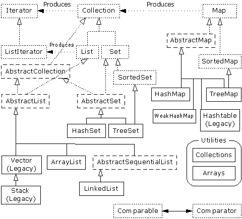
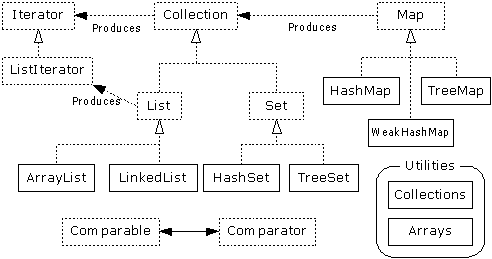

[ Предыдущая глава ] [ Оглавление ] [ Содержание ] [ Индекс ] [ Следующая глава ]
Это очень простая программа имеет только ограниченное число объектов с известным временем жизни.
В общем случае ваши программы будут всегда создавать новые объекты, основываясь на таких критериях, которые будут известны только во время выполнения программы. Вы не можете знать до запуска программы количество или даже точный тип необходимых объектов. Для решения общих проблем программирования вы должны быть способны создать любое число объектов в любое время, в любом месте. Так что вы на самом деле не можете создать поименованные ссылки, чтобы держать их для каждого вашего объекта:
MyObject myReference;
так как вы никогда не будете знать, сколько таких ссылок вам на самом деле необходимо.
Для решения этой насущной проблемы Java имеет несколько способов хранения объектов (или скорее, ссылок на объекты). Встроенным типом является массив, который обсуждался уже ранее. Также библиотека утилит Java имеет разумный набор контейнерный классов (также известных как классы сборки, поэтому библиотека Java 2 использует имя Collection для указания определенного набора библиотеки, я буду использовать более обобщающий термин “контейнер”). Контейнеры обеспечивают удовлетворительные способы хранения и манипуляции вашими объектами.
Наиболее необходимое введение в массивы в последнем разделе Главы 4, которая показывает, как вам определить и проинициализировать массив. Хранение объектов - это основная тема этой главы, а массивы - это просто один способ хранить объекты. Но есть несколько других способов хранения объектов, так что же делает массивы особенными?
Есть две проблемы, которые отличают массивы от других типов контейнеров: эффективность и тип. Массив является наиболее эффективным способом, из тех, которые обеспечивает Java, для хранения объектов и доступа к ним в случайном порядке (на самом деле, речь идет о ссылках на объекты). Массив - это простая линейная последовательность, которая делает быстрым доступ к элементам, но вы расплачиваетесь за эту скорость: когда вы создаете массив объектов, его размер фиксирован и не может изменяться в течение всей продолжительности жизни этого массива объектов. Вы можете согласиться создать массив определенного размера, а затем, если вы выйдите за пределы, создадите новый и переместите все ссылки из старого массива в новый. Такое поведение заключено в класс ArrayList, который будет изучен позже в этой главе. Однако, потому что превышение этого размера не всегда одинаково, ArrayList менее эффективен, чем массив.
Контейнерный класс vector в C++ знает тип объектов, которые он хранит, но он имеет другие недостатки по сравнению с массивами в Java: метод vector'а из С++ operator[] не делает проверки границ, так что вы можете выйти за пределы [44]. В Java есть проверка границ не зависимо от того используете ли вы массив или контейнер, вы получите RuntimeException, если вы выйдите за границы. Как вы выучили в Главе 10, этот тип исключения указывает на ошибку программы, и поэтому у вас нет необходимости выполнять проверку в вашем коде. С другой стороны, объяснением того, что vector из С++ не проверяет границы при каждом доступе, может стать скорость доступа, в Java вы имеете постоянную проверку на превышение пределов все время и для массивов и для контейнеров.
Другие основные контейнерные классы, которые мы изучим в этой главе, List, Set и Map, все имеют дело с объектами, как будто они не имеют определенного типа. То есть, они трактуются как тип Object - корневой класс для всех классов в Java. С одной точки зрения, это работает прекрасно: вам необходимо построить только один контейнер и все объекты будут подходить для этого контейнера. (За исключением примитивов, они могут быть помещены в контейнер как константы при использовании классов-оболочек Java для примитивных типов, или как переменные значения при использовании ваших собственных классов-оболочек.) Это второй момент, когда массив лучше общих контейнеров: когда вы создаете массив, вы создаете его для содержания определенного типа. Это значит, что вы имеете проверку типа во время компиляции для предотвращения помещения неправильного типа или ошибку типа при извлечении. Конечно, Java предохранит вас от посылки объекту неподходящего сообщения и во время компиляции и во время выполнения. Так что вы, так или иначе, не рискуете, это даже лучше, что компилятор направляет вас, это быстрее при выполнении и при этом меньше вероятность, что конечный пользователь будет удивлен, получив исключение.
Для эффективности и проверке типа ценной попыткой будет использование массива, если это возможно. Однако когда вы пробуете решить общую проблему, массив может быть слишком ограничен. После обзора массивов остаток этой главы будет посвящен контейнерным классам, имеющимся в Java.
Независимо от типа массива, с которым вы работаете, идентификатор массива на самом деле указывает на действительные объекты, создаваемые в куче. Это объект, который содержит ссылки на другие объекты, и он может быть создан либо косвенным образом, как часть синтаксиса инициализации массива, либо явно с помощью выражения new. Частью объекта массива (фактически, только поле или метод, к которому вы можете получить доступ) является член length с доступом только для чтения, который говорит вам, сколько элементов можно хранить в объекте массива. Синтаксис ‘[]’ - это просто способ доступа, который вы имеете к объекту массива.
Следующий пример показывает различные способы, которыми может быть инициализирован массив, и как ссылки на объект могут быть присвоены различным объектам массива. Он также показывает, что массив объектов и массив примитивов почти идентичны в использовании. Отличие только в том, что массив объектов хранит ссылки, в то время как массив примитивов хранит значения примитивов напрямую.
//: c09:ArraySize.java
// Инициализация & пере присвоение массивов.
class Weeble {} // Немного мистическое создание
public class ArraySize {
public static void main(String[] args) {
// Массивы объектов:
Weeble[] a; // Null - ссылки
Weeble[] b = new Weeble[5]; // Null - ссылки
Weeble[] c = new Weeble[4];
for(int i = 0; i < c.length; i++)
c[i] = new Weeble();
// Групповая инициализация:
Weeble[] d = {
new Weeble(), new Weeble(), new Weeble()
};
// Динамическая групповая инициализация:
a = new Weeble[] {
new Weeble(), new Weeble()
};
System.out.println("a.length=" + a.length);
System.out.println("b.length = " + b.length);
// Ссылки внутри массива автоматически
// инициализируются значением null:
for(int i = 0; i < b.length; i++)
System.out.println("b[" + i + "]=" + b[i]);
System.out.println("c.length = " + c.length);
System.out.println("d.length = " + d.length);
a = d;
System.out.println("a.length = " + a.length);
// Массив примитивов:
int[] e; // Null - ссылка
int[] f = new int[5];
int[] g = new int[4];
for(int i = 0; i < g.length; i++)
g[i] = i*i;
int[] h = { 11, 47, 93 };
// Ошибка компиляции: переменная e не инициализирована
//!System.out.println("e.length=" + e.length);
System.out.println("f.length = " + f.length);
// Примитивы внутри массива
// автоматически инициализируются нулем:
for(int i = 0; i < f.length; i++)
System.out.println("f[" + i + "]=" + f[i]);
System.out.println("g.length = " + g.length);
System.out.println("h.length = " + h.length);
e = h;
System.out.println("e.length = " + e.length);
e = new int[] { 1, 2 };
System.out.println("e.length = " + e.length);
}
} ///:~
Вот что программа выдает на выходе:
b.length = 5 b[0]=null b[1]=null b[2]=null b[3]=null b[4]=null c.length = 4 d.length = 3 a.length = 3 a.length = 2 f.length = 5 f[0]=0 f[1]=0 f[2]=0 f[3]=0 f[4]=0 g.length = 4 h.length = 3 e.length = 3 e.length = 2
Массив a изначально это просто null-ссылка, и компилятор предохраняет вас от работы с этой ссылкой, пока вы правильно не инициализируете ее. Массив b инициализирован и указывает на массив ссылок Weeble, но никакие реальные объекты не помещаются в этот массив. Однако вы все равно спросить размер массива, так как b указывает на допустимый объект. Здесь мы получаем небольшой недостаток: вы не можете определить, сколько элементов на самом деле есть в массиве, так как length говорит нам о том, сколько элементов могут быть помещены в массив; то есть, размер массива объектов - это не число элементов реально хранящихся в нем. Однако когда создается массив объектов, его ссылки автоматически инициализируются значением null, так что вы можете проверить, имеется ли в определенной ячейке массива объект, просто проверив ее на null. Аналогично массив примитивов автоматически инициализируется нулями для числовых типов: (char)0 для char и false для boolean.
Массив c показывает создание массива объектов, за которым следует присвоение объектов Weeble для всех ячеек массива. Массив d показывает синтаксис “групповой инициализации”, которая является причиной того, что массив объектов создается (косвенным образом с помощью new в куче, так же как и массив c) и инициализируется объектами Weeble, и все это в одной инструкции.
О следующей инициализации массива можно думать, как о “динамической групповой инициализации”. Групповая инициализация, использованная для d, должна использоваться в точке определения d, но со вторым синтаксисом вы можете создавать и инициализировать объекты где угодно. Например, предположим, есть метод hide( ), который принимает массив объектов Weeble. Вы можете вызвать его, сказав:
hide(d);
но вы можете также динамически создать массив, который вы хотите передать в качестве аргумента:
hide(new Weeble[] { new Weeble(), new Weeble() });В некоторых ситуациях этот новый синтаксис обеспечивает более удобный способ для написания кода.
Выражение:
a = d;
показывает, как вы можете получить ссылку, которая присоединена к массиву объектов, и присвоить ее другому массиву объектов, также как вы делаете это с другими типами ссылок на объекты. Теперь и a, и d указывают на один и тот же массив объектов в куче.
Вторая часть ArraySize.java показывает, что массив примитивов работает точно так же, как и массив объектов, за исключением того, что массив примитивов содержит значения примитивов напрямую.
Контейнерные классы могут хранить только ссылки на объекты. Однако массивы могут создаваться для хранения примитивных типов так же, как и для хранения объектов. Возможно, использовать классы-оболочки, такие как Integer, Double и т.п., для помещения примитивных значений в контейнер, но классы-оболочки для примитивов может быть неудобно использовать. Кроме того, более эффективно создавать и пользоваться массивом примитивов, чем контейнером для оболочек примитивов.
Конечно, если вы используете примитивные типы и вам необходима гибкость контейнера, который автоматически растягивается, когда необходимо дополнительное пространство, массивы так не работают и вы вынуждены использовать контейнер для оболочек примитивов. Вы можете подумать, что должен быть специальный тип ArrayList для каждого примитивного типа данных, но Java не предлагает их вам. Механизм шаблонизации определенного сорта в Java может иногда обеспечить лучший способ для решения этой проблемы.[45]
Предположим, что вы пишите метод и не хотите возвращать только одну вещь, а целый набор вещей. Такие языки, как C и C++ делают это очень сложно, потому что вы не можете вернуть массив, а только указатель на массив. Это приводит к проблемам, потому что необходимо управлять временем жизни массива, что легко приводит к утечке памяти.
Java имеет схожий подход, но вы можете просто “вернуть массив”. На самом деле, конечно, вы возвращаете ссылку на массив, но в Java вам нет необходимости нести ответственность за этот массив, он будет существовать столько, сколько вам нужно, а сборщик мусора очистит его, когда вы закончите работу с ним.
Посмотрите пример возвращения
массива String:
//: c09:IceCream.java
// Возвращение массивов из методов.
public class IceCream {
static String[] flav = {
"Chocolate", "Strawberry",
"Vanilla Fudge Swirl", "Mint Chip",
"Mocha Almond Fudge", "Rum Raisin",
"Praline Cream", "Mud Pie"
};
static String[] flavorSet(int n) {
// Это должно быть положительным & ограниченным:
n = Math.abs(n) % (flav.length + 1);
String[] results = new String[n];
boolean[] picked =
new boolean[flav.length];
for (int i = 0; i < n; i++) {
int t;
do
t = (int)(Math.random() * flav.length);
while (picked[t]);
results[i] = flav[t];
picked[t] = true;
}
return results;
}
public static void main(String[] args) {
for(int i = 0; i < 20; i++) {
System.out.println(
"flavorSet(" + i + ") = ");
String[] fl = flavorSet(flav.length);
for(int j = 0; j < fl.length; j++)
System.out.println("\t" + fl[j]);
}
}
} ///:~
Метод flavorSet( ) создает массив String, называемый results. Размер массива - n, определяется аргументом, передаваемым вами в метод. Затем выполняется случайный выбор вкуса из массива flav и помещение его в results, который в конце возвращается. Возврат массива, так же, как и возврат любого объекта, это ссылка. Неважно, что массив был создан внутри flavorSet( ), или что массив был создан в любом другом месте, это не имеет значения. Сборщик мусора позаботится о его очистке, когда вы завершите с ним работать, а массив будет существовать для нас столько, сколько он вам понадобится.
С другой стороны, обратите внимание, что когда flavorSet( ) выбирает вкус случайным образом, происходит проверка, что это значение случайно не было выбрано ранее. Это выполняется в цикле do, который сохраняет случайность порядка, пока не найдет тот, который еще не выбран в массиве picked. (Конечно, также можно выполнить сравнение для String, чтобы посмотреть, что случайно выбранный элемент уже не выбран в массив results, но сравнение для String не эффективно.) Если проверка прошла удачно, элемент добавляется и ищется следующий (i получает приращение).
main( ) печатает 20 полных наборов вкусов, так что вы можете увидеть, что flavorSet( ) выбирает вкусы в случайном порядке всякий раз. Это легче увидеть, если вы перенаправите вывод в файл. И пока вы смотрите на файл, помните, что вы только хотите мороженое, но вам оно не нужно.
В java.util вы найдете класс Arrays, который содержит набор статических методов, выполняющих вспомогательные функции для массивов. Среди них четыре основных функции: equals( ) - для сравнения двух массивов на равенство; fill( ) - для заполнения массива значением; sort( ) - для сортировки массива; и binarySearch( ) - для нахождения элемента в отсортированном массиве. Все эти методы перегружены для всех примитивных типов и для типа Object. Кроме того, есть одиночный метод asList( ), который получает массив и переводит его в контейнер List, который вы выучите позже в этой главе.
Являясь полезным, класс Arrays остается маленьким, вобрав в себя всю функциональность. Например, было бы здорово иметь возможность легко печатать элементы массива, не вводя код цикла for всякий раз. И, как вы увидите, метод fill( ) получает только одно значение и помещает его в массив, так что, если вы хотите, например, заполнить массив случайными числами, fill( ) - не помощник.
Так что есть смысл пополнить класс Arrays дополнительными утилитами, которые будут по соглашению помешены в package com.bruceeckel.util. Здесь будет печать массива любого типа и заполнения массива значениями или объектами, которые создаются объектом, называемым генератор, который определите вы.
Поскольку необходим код для создания каждого примитивного типа наряду с Object, будет много сильно похожего кода [46]. Например, интерфейс “генератор” требуется для каждого типа, потому что возвращаемый тип next( ) должен быть различным в каждом случае:
//: com:bruceeckel:util:Generator.java
package com.bruceeckel.util;
public interface Generator {
Object next();
} ///:~
//: com:bruceeckel:util:BooleanGenerator.java
package com.bruceeckel.util;
public interface BooleanGenerator {
boolean next();
} ///:~
//: com:bruceeckel:util:ByteGenerator.java
package com.bruceeckel.util;
public interface ByteGenerator {
byte next();
} ///:~
//: com:bruceeckel:util:CharGenerator.java
package com.bruceeckel.util;
public interface CharGenerator {
char next();
} ///:~
//: com:bruceeckel:util:ShortGenerator.java
package com.bruceeckel.util;
public interface ShortGenerator {
short next();
} ///:~
//: com:bruceeckel:util:IntGenerator.java
package com.bruceeckel.util;
public interface IntGenerator {
int next();
} ///:~
//: com:bruceeckel:util:LongGenerator.java
package com.bruceeckel.util;
public interface LongGenerator {
long next();
} ///:~
//: com:bruceeckel:util:FloatGenerator.java
package com.bruceeckel.util;
public interface FloatGenerator {
float next();
} ///:~
//: com:bruceeckel:util:DoubleGenerator.java
package com.bruceeckel.util;
public interface DoubleGenerator {
double next();
} ///:~Arrays2 содержит варианты функций print( ), перегруженной для каждого типа. Вы можете просто напечатать массив, вы можете добавить сообщение перед печатью массива или вы можете напечатать пределы элементов массива. Код метода print( ) говорит сам за себя:
//: com:bruceeckel:util:Arrays2.java
// Дополнение к java.util.Arrays, для обеспечения
// дополнительной полезной функциональности при работе
// с массивами. Позволяет печатать массивы,
// и заполнять их определенными пользователем
// "генераторами" объектов.
package com.bruceeckel.util;
import java.util.*;
public class Arrays2 {
private static void
start(int from, int to, int length) {
if(from != 0 || to != length)
System.out.print("["+ from +":"+ to +"] ");
System.out.print("(");
}
private static void end() {
System.out.println(")");
}
public static void print(Object[] a) {
print(a, 0, a.length);
}
public static void
print(String msg, Object[] a) {
System.out.print(msg + " ");
print(a, 0, a.length);
}
public static void
print(Object[] a, int from, int to){
start(from, to, a.length);
for(int i = from; i < to; i++) {
System.out.print(a[i]);
if(i < to -1)
System.out.print(", ");
}
end();
}
public static void print(boolean[] a) {
print(a, 0, a.length);
}
public static void
print(String msg, boolean[] a) {
System.out.print(msg + " ");
print(a, 0, a.length);
}
public static void
print(boolean[] a, int from, int to) {
start(from, to, a.length);
for(int i = from; i < to; i++) {
System.out.print(a[i]);
if(i < to -1)
System.out.print(", ");
}
end();
}
public static void print(byte[] a) {
print(a, 0, a.length);
}
public static void
print(String msg, byte[] a) {
System.out.print(msg + " ");
print(a, 0, a.length);
}
public static void
print(byte[] a, int from, int to) {
start(from, to, a.length);
for(int i = from; i < to; i++) {
System.out.print(a[i]);
if(i < to -1)
System.out.print(", ");
}
end();
}
public static void print(char[] a) {
print(a, 0, a.length);
}
public static void
print(String msg, char[] a) {
System.out.print(msg + " ");
print(a, 0, a.length);
}
public static void
print(char[] a, int from, int to) {
start(from, to, a.length);
for(int i = from; i < to; i++) {
System.out.print(a[i]);
if(i < to -1)
System.out.print(", ");
}
end();
}
public static void print(short[] a) {
print(a, 0, a.length);
}
public static void
print(String msg, short[] a) {
System.out.print(msg + " ");
print(a, 0, a.length);
}
public static void
print(short[] a, int from, int to) {
start(from, to, a.length);
for(int i = from; i < to; i++) {
System.out.print(a[i]);
if(i < to - 1)
System.out.print(", ");
}
end();
}
public static void print(int[] a) {
print(a, 0, a.length);
}
public static void
print(String msg, int[] a) {
System.out.print(msg + " ");
print(a, 0, a.length);
}
public static void
print(int[] a, int from, int to) {
start(from, to, a.length);
for(int i = from; i < to; i++) {
System.out.print(a[i]);
if(i < to - 1)
System.out.print(", ");
}
end();
}
public static void print(long[] a) {
print(a, 0, a.length);
}
public static void
print(String msg, long[] a) {
System.out.print(msg + " ");
print(a, 0, a.length);
}
public static void
print(long[] a, int from, int to) {
start(from, to, a.length);
for(int i = from; i < to; i++) {
System.out.print(a[i]);
if(i < to - 1)
System.out.print(", ");
}
end();
}
public static void print(float[] a) {
print(a, 0, a.length);
}
public static void
print(String msg, float[] a) {
System.out.print(msg + " ");
print(a, 0, a.length);
}
public static void
print(float[] a, int from, int to) {
start(from, to, a.length);
for(int i = from; i < to; i++) {
System.out.print(a[i]);
if(i < to - 1)
System.out.print(", ");
}
end();
}
public static void print(double[] a) {
print(a, 0, a.length);
}
public static void
print(String msg, double[] a) {
System.out.print(msg + " ");
print(a, 0, a.length);
}
public static void
print(double[] a, int from, int to){
start(from, to, a.length);
for(int i = from; i < to; i++) {
System.out.print(a[i]);
if(i < to - 1)
System.out.print(", ");
}
end();
}
// Заполнение массива с использованием генератора:
public static void
fill(Object[] a, Generator gen) {
fill(a, 0, a.length, gen);
}
public static void
fill(Object[] a, int from, int to,
Generator gen){
for(int i = from; i < to; i++)
a[i] = gen.next();
}
public static void
fill(boolean[] a, BooleanGenerator gen) {
fill(a, 0, a.length, gen);
}
public static void
fill(boolean[] a, int from, int to,
BooleanGenerator gen) {
for(int i = from; i < to; i++)
a[i] = gen.next();
}
public static void
fill(byte[] a, ByteGenerator gen) {
fill(a, 0, a.length, gen);
}
public static void
fill(byte[] a, int from, int to,
ByteGenerator gen) {
for(int i = from; i < to; i++)
a[i] = gen.next();
}
public static void
fill(char[] a, CharGenerator gen) {
fill(a, 0, a.length, gen);
}
public static void
fill(char[] a, int from, int to,
CharGenerator gen) {
for(int i = from; i < to; i++)
a[i] = gen.next();
}
public static void
fill(short[] a, ShortGenerator gen) {
fill(a, 0, a.length, gen);
}
public static void
fill(short[] a, int from, int to,
ShortGenerator gen) {
for(int i = from; i < to; i++)
a[i] = gen.next();
}
public static void
fill(int[] a, IntGenerator gen) {
fill(a, 0, a.length, gen);
}
public static void
fill(int[] a, int from, int to,
IntGenerator gen) {
for(int i = from; i < to; i++)
a[i] = gen.next();
}
public static void
fill(long[] a, LongGenerator gen) {
fill(a, 0, a.length, gen);
}
public static void
fill(long[] a, int from, int to,
LongGenerator gen) {
for(int i = from; i < to; i++)
a[i] = gen.next();
}
public static void
fill(float[] a, FloatGenerator gen) {
fill(a, 0, a.length, gen);
}
public static void
fill(float[] a, int from, int to,
FloatGenerator gen) {
for(int i = from; i < to; i++)
a[i] = gen.next();
}
public static void
fill(double[] a, DoubleGenerator gen) {
fill(a, 0, a.length, gen);
}
public static void
fill(double[] a, int from, int to,
DoubleGenerator gen){
for(int i = from; i < to; i++)
a[i] = gen.next();
}
private static Random r = new Random();
public static class RandBooleanGenerator
implements BooleanGenerator {
public boolean next() {
return r.nextBoolean();
}
}
public static class RandByteGenerator
implements ByteGenerator {
public byte next() {
return (byte)r.nextInt();
}
}
static String ssource =
"ABCDEFGHIJKLMNOPQRSTUVWXYZ" +
"abcdefghijklmnopqrstuvwxyz";
static char[] src = ssource.toCharArray();
public static class RandCharGenerator
implements CharGenerator {
public char next() {
int pos = Math.abs(r.nextInt());
return src[pos % src.length];
}
}
public static class RandStringGenerator
implements Generator {
private int len;
private RandCharGenerator cg =
new RandCharGenerator();
public RandStringGenerator(int length) {
len = length;
}
public Object next() {
char[] buf = new char[len];
for(int i = 0; i < len; i++)
buf[i] = cg.next();
return new String(buf);
}
}
public static class RandShortGenerator
implements ShortGenerator {
public short next() {
return (short)r.nextInt();
}
}
public static class RandIntGenerator
implements IntGenerator {
private int mod = 10000;
public RandIntGenerator() {}
public RandIntGenerator(int modulo) {
mod = modulo;
}
public int next() {
return r.nextInt() % mod;
}
}
public static class RandLongGenerator
implements LongGenerator {
public long next() { return r.nextLong(); }
}
public static class RandFloatGenerator
implements FloatGenerator {
public float next() { return r.nextFloat(); }
}
public static class RandDoubleGenerator
implements DoubleGenerator {
public double next() {return r.nextDouble();}
}
} ///:~
Для заполнения массива с использованием генератора метод fill( ) получает ссылку на подходящий interface генератора, который имеет метод next( ), который каким-то образом производит объект правильного типа (в зависимости от того, как реализован интерфейс). Метод fill( ) просто вызывает next( ) до тех пор, пока не будут достигнуты нужные пределы для заполнения. Теперь вы можете создать любой генератор, реализовав подходящий interface, и использовать ваш генератор с методом fill( ).
Случайные генераторы данных полезны для тестирования, так что набор внутренних классов создается для реализации всех интерфейсов примитивных генераторов, так же как и генератор String, представляющий Object. Вы можете видеть, что RandStringGenerator использует RandCharGenerator для заполнения массива символов, который затем переводится в String. Размер массива определяется по аргументу конструктора.
Для генерации не слишком больших чисел RandIntGenerator берет по умолчанию остаток от деления на 10,000, но перегрузка конструктора позволит вам выбрать меньшее значение.
Вот программа для проверки библиотеки и демонстрации ее использования:
//: c09:TestArrays2.java
// Проверки и демонстрация утилит Arrays2
import com.bruceeckel.util.*;
public class TestArrays2 {
public static void main(String[] args) {
int size = 6;
// Или получим size из командной строки:
if(args.length != 0)
size = Integer.parseInt(args[0]);
boolean[] a1 = new boolean[size];
byte[] a2 = new byte[size];
char[] a3 = new char[size];
short[] a4 = new short[size];
int[] a5 = new int[size];
long[] a6 = new long[size];
float[] a7 = new float[size];
double[] a8 = new double[size];
String[] a9 = new String[size];
Arrays2.fill(a1,
new Arrays2.RandBooleanGenerator());
Arrays2.print(a1);
Arrays2.print("a1 = ", a1);
Arrays2.print(a1, size/3, size/3 + size/3);
Arrays2.fill(a2,
new Arrays2.RandByteGenerator());
Arrays2.print(a2);
Arrays2.print("a2 = ", a2);
Arrays2.print(a2, size/3, size/3 + size/3);
Arrays2.fill(a3,
new Arrays2.RandCharGenerator());
Arrays2.print(a3);
Arrays2.print("a3 = ", a3);
Arrays2.print(a3, size/3, size/3 + size/3);
Arrays2.fill(a4,
new Arrays2.RandShortGenerator());
Arrays2.print(a4);
Arrays2.print("a4 = ", a4);
Arrays2.print(a4, size/3, size/3 + size/3);
Arrays2.fill(a5,
new Arrays2.RandIntGenerator());
Arrays2.print(a5);
Arrays2.print("a5 = ", a5);
Arrays2.print(a5, size/3, size/3 + size/3);
Arrays2.fill(a6,
new Arrays2.RandLongGenerator());
Arrays2.print(a6);
Arrays2.print("a6 = ", a6);
Arrays2.print(a6, size/3, size/3 + size/3);
Arrays2.fill(a7,
new Arrays2.RandFloatGenerator());
Arrays2.print(a7);
Arrays2.print("a7 = ", a7);
Arrays2.print(a7, size/3, size/3 + size/3);
Arrays2.fill(a8,
new Arrays2.RandDoubleGenerator());
Arrays2.print(a8);
Arrays2.print("a8 = ", a8);
Arrays2.print(a8, size/3, size/3 + size/3);
Arrays2.fill(a9,
new Arrays2.RandStringGenerator(7));
Arrays2.print(a9);
Arrays2.print("a9 = ", a9);
Arrays2.print(a9, size/3, size/3 + size/3);
}
} ///:~
Параметр size имеет значение по умолчанию, но вы можете также установить его из командной строки.
Стандартная библиотека Java Arrays также имеет метод fill( ), но он достаточно простой, он просто дублирует одно значение в каждую ячейку или, в случае объектов, копирует одну и ту же ссылку в каждую ячейку. Используя Arrays2.print( ), можно легко продемонстрировать метод Arrays.fill( ):
//: c09:FillingArrays.java
// Использование Arrays.fill()
import com.bruceeckel.util.*;
import java.util.*;
public class FillingArrays {
public static void main(String[] args) {
int size = 6;
// Или получим size из командной строки:
if(args.length != 0)
size = Integer.parseInt(args[0]);
boolean[] a1 = new boolean[size];
byte[] a2 = new byte[size];
char[] a3 = new char[size];
short[] a4 = new short[size];
int[] a5 = new int[size];
long[] a6 = new long[size];
float[] a7 = new float[size];
double[] a8 = new double[size];
String[] a9 = new String[size];
Arrays.fill(a1, true);
Arrays2.print("a1 = ", a1);
Arrays.fill(a2, (byte)11);
Arrays2.print("a2 = ", a2);
Arrays.fill(a3, 'x');
Arrays2.print("a3 = ", a3);
Arrays.fill(a4, (short)17);
Arrays2.print("a4 = ", a4);
Arrays.fill(a5, 19);
Arrays2.print("a5 = ", a5);
Arrays.fill(a6, 23);
Arrays2.print("a6 = ", a6);
Arrays.fill(a7, 29);
Arrays2.print("a7 = ", a7);
Arrays.fill(a8, 47);
Arrays2.print("a8 = ", a8);
Arrays.fill(a9, "Hello");
Arrays2.print("a9 = ", a9);
// Манипуляция пределами:
Arrays.fill(a9, 3, 5, "World");
Arrays2.print("a9 = ", a9);
}
} ///:~
Вы можете заполнить либо весь массив, или, как показывают два последних выражения, диапазон элементов. Но так как вы передаете только одно значение для заполнения с использованием Arrays.fill( ), метод Arrays2.fill( ) производит более интересный результат.
Стандартная библиотека Java обеспечивает static метод System.arraycopy( ), который может ускорить копирование массива по сравнению с использование цикла for для выполнения копирования в ручную. System.arraycopy( ) перегружена для обработки всех типов. Вот пример, который манипулирует массивами типа int:
//: c09:CopyingArrays.java
// Использование System.arraycopy()
import com.bruceeckel.util.*;
import java.util.*;
public class CopyingArrays {
public static void main(String[] args) {
int[] i = new int[25];
int[] j = new int[25];
Arrays.fill(i, 47);
Arrays.fill(j, 99);
Arrays2.print("i = ", i);
Arrays2.print("j = ", j);
System.arraycopy(i, 0, j, 0, i.length);
Arrays2.print("j = ", j);
int[] k = new int[10];
Arrays.fill(k, 103);
System.arraycopy(i, 0, k, 0, k.length);
Arrays2.print("k = ", k);
Arrays.fill(k, 103);
System.arraycopy(k, 0, i, 0, k.length);
Arrays2.print("i = ", i);
// Объекты:
Integer[] u = new Integer[10];
Integer[] v = new Integer[5];
Arrays.fill(u, new Integer(47));
Arrays.fill(v, new Integer(99));
Arrays2.print("u = ", u);
Arrays2.print("v = ", v);
System.arraycopy(v, 0,
u, u.length/2, v.length);
Arrays2.print("u = ", u);
}
} ///:~
Аргументы для arraycopy( ) - это исходный массив, смещение в исходном массиве, от которого нужно начать копирование, принимающий массив, смещение в принимающем массиве, куда начнется копироваться, и число элементов для копирования. Естественно, нарушение границ массива является причиной исключения.
Пример показывает, что и примитивный массив, и массив объектов может быть скопирован. Однако если вы копируете массив объектов, то копируются только ссылки, не происходит дублирования самих объектов. Это называется поверхностным копирование (смотрите Приложение A).
Arrays обеспечивает перегруженный метод equals( ) для сравнения целых массивов на равенство. Также, он перегружен для всех примитивов и для Object. Чтобы быть равными, массивы должны иметь одинаковое число элементов, а каждый элемент должен быть равен каждому соответствующему элементу другого массива, используя equals( ) для каждого элемента. (Для примитивов используется equals( ) для класса-оболочки примитива; например, Integer.equals( ) для int.) Вот пример:
//: c09:ComparingArrays.java
// Использование Arrays.equals()
import java.util.*;
public class ComparingArrays {
public static void main(String[] args) {
int[] a1 = new int[10];
int[] a2 = new int[10];
Arrays.fill(a1, 47);
Arrays.fill(a2, 47);
System.out.println(Arrays.equals(a1, a2));
a2[3] = 11;
System.out.println(Arrays.equals(a1, a2));
String[] s1 = new String[5];
Arrays.fill(s1, "Hi");
String[] s2 = {"Hi", "Hi", "Hi", "Hi", "Hi"};
System.out.println(Arrays.equals(s1, s2));
}
} ///:~
Изначально a1 и a2 точно равны, так что на выходе получаем “true”, но затем один элемент меняется, так что вторая строка выводит “false”. В последнем случае все элементы s1указывают на один и тот же объект, а s2 имеет пять уникальных элементов. Однако равенство объектов базируется на соглашении (через Object.equals( )), так что результат - “true”.
Одна из возможностей, отсутствующих в библиотеках Java 1.0 и 1.1 - это алгоритмические операции — даже простая сортировка. Это была довольно смущающая ситуация для того, что ожидал соответствующую стандартную библиотеку. К счастью, Java 2 исправил ситуацию, как минимум, с проблемой сортировки.
Проблема при написании общего кода сортировки в том, что сортировка должна выполнять сравнение, основываясь на реальном типе объектов. Конечно, один из подходов - это написание различных методов сортировки для каждого из имеющихся типов, но вы должны быть способны понять, что это не продуктивный способ, который легко повторно использовать для новых типов.
Основная цель дизайна программирования состоит в “разделении вещей, которые меняются, от вещей, которые остаются теми же”. В этом случае код, который остается тем же самым - это общий алгоритм сортировки, а вещи, которые меняются при следующим использовании - это способ сравнения объектов. Так что вместо тяжелого написания кода сравнения для многих разных процедур сортировки используется техника обратного вызова. При обратном вызове часть кода, которая меняется от случая к случаю, инкапсулируется в собственный класс, а часть кода, которая всегда остается той же, совершает обратный вызов этого изменяемого кода. Этим способ ом вы можете создавать разные объекты, определяя различные способы сравнения, и передавать их одному и тому же коду сортировки.
В Java 2 есть два способа обеспечения функциональности сравнения. Первый из них - естественный метод сравнения, который импортируется в класс путем реализации интерфейса java.lang.Comparable. Это очень простой интерфейс с единственным методом compareTo( ). Этот метод принимает другой Object, как аргумент, и производит отрицательное значение, если аргумент меньше, чем текущий объект, ноль, если аргумент равен, и положительное значение, если аргумент больше текущего объекта.
Здесь приведен класс, реализующий Comparable и демонстрирующий сравнение при использовании метода Arrays.sort( ) стандартной библиотеки Java:
//: c09:CompType.java
// Реализация Comparable в классе.
import com.bruceeckel.util.*;
import java.util.*;
public class CompType implements Comparable {
int i;
int j;
public CompType(int n1, int n2) {
i = n1;
j = n2;
}
public String toString() {
return "[i = " + i + ", j = " + j + "]";
}
public int compareTo(Object rv) {
int rvi = ((CompType)rv).i;
return (i < rvi ? -1 : (i == rvi ? 0 : 1));
}
private static Random r = new Random();
private static int randInt() {
return Math.abs(r.nextInt()) % 100;
}
public static Generator generator() {
return new Generator() {
public Object next() {
return new CompType(randInt(),randInt());
}
};
}
public static void main(String[] args) {
CompType[] a = new CompType[10];
Arrays2.fill(a, generator());
Arrays2.print("before sorting, a = ", a);
Arrays.sort(a);
Arrays2.print("after sorting, a = ", a);
}
} ///:~
Когда вы определяете функцию сравнения, вы несете ответственность за смысл, вкладываемый в сравнение одного вашего объекта с другим. В этом примере для сравнения используется только значение i, а значение j игнорируется.
Метод static randInt( ) производит положительное значение между нулем и 100, а метод generator( ) производит объект, который реализует интерфейс Generator при создании анонимного внутреннего класса (смотрите Главу 8). Таким образом, создается объект CompType и инициализируется случайными значениями. В функции main( ) используется генератор для заполнения массива типа CompType. Если Comparable не будет реализован, то вы получите сообщение об ошибке времени компиляции, когда попробуете вызвать функцию sort( ).
Теперь предположим, что кто-то передал вам класс, реализующий Comparable, или вы получаете класс, который реализует Comparable, но вам не нравится способ, которым он работает и вы хотите в дальнейшем иметь другую функцию сравнения для этого типа. Чтобы сделать это, вы используете второй подход для сравнения объектов, создавая отдельный класс, который реализует интерфейс, называемый Comparator. Он имеет два метода: compare( ) и equals( ). Однако вам не нужно реализовывать equals( ) за исключением случаев, требующих особой производительности, потому что всегда, когда вы создаете класс, он обязательно наследуется от Object, который имеет метод equals( ). Так что вы просто можете использовать по умолчанию Object equals( ) и удовлетворится договоренностями, налагаемыми интерфейсами.
Класс Collections (который мы рассмотрим немного позже) содержит только Comparator, который меняет порядок сортировки на обратный естественному. Это легко может быть применено к CompType:
//: c09:Reverse.java
// Collecions.reverseOrder() Comparator.
import com.bruceeckel.util.*;
import java.util.*;
public class Reverse {
public static void main(String[] args) {
CompType[] a = new CompType[10];
Arrays2.fill(a, CompType.generator());
Arrays2.print("before sorting, a = ", a);
Arrays.sort(a, Collections.reverseOrder());
Arrays2.print("after sorting, a = ", a);
}
} ///:~
Вызов Collections.reverseOrder( ) производит ссылку на Comparator.
В качестве второго примера Comparator сравнивает объекты CompType, основываясь на их значениях j, а не на их значениях i:
//: c09:ComparatorTest.java
// Реализация Comparator для класса.
import com.bruceeckel.util.*;
import java.util.*;
class CompTypeComparator implements Comparator {
public int compare(Object o1, Object o2) {
int j1 = ((CompType)o1).j;
int j2 = ((CompType)o2).j;
return (j1 < j2 ? -1 : (j1 == j2 ? 0 : 1));
}
}
public class ComparatorTest {
public static void main(String[] args) {
CompType[] a = new CompType[10];
Arrays2.fill(a, CompType.generator());
Arrays2.print("before sorting, a = ", a);
Arrays.sort(a, new CompTypeComparator());
Arrays2.print("after sorting, a = ", a);
}
} ///:~
Метод compare( ) должен возвращать отрицательное, нулевое или положительное значение, если первый аргумент меньше, равен или больше второго, соответственно.
С помощью встроенного метода сортировки вы можете сортировать любой массив примитивных типов и любой массив объектов, который реализует Comparable или имеет ассоциированный Comparator. Таким образом, заполняется большая дыра в библиотеке Java — верите или нет, но в Java 1.0 или 1.1 не было поддержки для сортировки String! Вот пример, который генерирует случайным образом объекты String и сортирует их:
//: c09:StringSorting.java
// Сортировка массива Strings.
import com.bruceeckel.util.*;
import java.util.*;
public class StringSorting {
public static void main(String[] args) {
String[] sa = new String[30];
Arrays2.fill(sa,
new Arrays2.RandStringGenerator(5));
Arrays2.print("Before sorting: ", sa);
Arrays.sort(sa);
Arrays2.print("After sorting: ", sa);
}
} ///:~
Одно вы должны заметить об алгоритме сортировки при выводе String - это лексикография, которая помещает все слова, начинающиеся с большой буквы, вперед, а далее следуют все слова, начинающиеся с маленьких букв. (Телефонные книги обычно упорядочены таким образом.) Вы можете также сгруппировать слова вместе, не зависимо от регистра, и вы можете сделать это, определив класс Comparator и, таким образом, перегрузив поведение по умолчанию для String Comparable. Для повторного использования это будет добавлено в пакет “util”:
//: com:bruceeckel:util:AlphabeticComparator.java
// Собираем вместе большие и маленькие буквы.
package com.bruceeckel.util;
import java.util.*;
public class AlphabeticComparator
implements Comparator{
public int compare(Object o1, Object o2) {
String s1 = (String)o1;
String s2 = (String)o2;
return s1.toLowerCase().compareTo(
s2.toLowerCase());
}
} ///:~
Каждый String преобразуется в нижний регистр перед сравнением. Встроенный метод compareTo( ) для String обеспечивает желаемую функциональность.
Вот тест использования AlphabeticComparator:
//: c09:AlphabeticSorting.java
//Собираем вместе большие и маленькие буквы.
import com.bruceeckel.util.*;
import java.util.*;
public class AlphabeticSorting {
public static void main(String[] args) {
String[] sa = new String[30];
Arrays2.fill(sa,
new Arrays2.RandStringGenerator(5));
Arrays2.print("Before sorting: ", sa);
Arrays.sort(sa, new AlphabeticComparator());
Arrays2.print("After sorting: ", sa);
}
} ///:~
Алгоритм сортировки, который используется в стандартной библиотеке Java, оптимально предназначен для определенного типа, сортируемого вами — быстрая сортировка для примитивных типов соизмерима по скорости с сортировкой для объектов. Так что вам нет необходимости тратить какое-то время на заботу о производительности, пока ваш инструмент профилирования не укажет на процесс сортировки, как на узкое место.
Как только массив отсортирован, вы можете выполнить быстрый поиск определенного элемента, используя Arrays.binarySearch( ). Однако очень важно, чтобы вы не пробовали использовать binarySearch( ) для не отсортированного массива, иначе получите непредсказуемый результат. Следующий пример использует RandIntGenerator для заполнения массива, затем для получения значений поиска:
//: c09:ArraySearching.java
// Использование Arrays.binarySearch().
import com.bruceeckel.util.*;
import java.util.*;
public class ArraySearching {
public static void main(String[] args) {
int[] a = new int[100];
Arrays2.RandIntGenerator gen =
new Arrays2.RandIntGenerator(1000);
Arrays2.fill(a, gen);
Arrays.sort(a);
Arrays2.print("Sorted array: ", a);
while(true) {
int r = gen.next();
int location = Arrays.binarySearch(a, r);
if(location >= 0) {
System.out.println("Location of " + r +
" is " + location + ", a[" +
location + "] = " + a[location]);
break; // выход из цикла
}
}
}
} ///:~
В цикле while генерируются случайные значения в качестве элементов поиска до тех пор, пока одно из них не будет найдено.
Arrays.binarySearch( ) производит значение большее или равное нулю, если элемент найден. В противном случае он производит отрицательное значение, представляющее место, в котором этот элемент должен быть вставлен, если вы имеете дело с отсортированным массивом. Производимое значение - это
-(точка вставки) - 1
Точка вставки - это индекс первого элемента, который больше ключевого значения, или a.size( ), если все элементы массива меньше, чем указанное значение.
Если массив содержит дублирующиеся элементы, то нет гарантии, какой из них будет найден. Алгоритм реально не предназначен для поддержки поиска одинаковых элементов, если они допускаются. Однако, если вам нужен отсортированный список не дублируемых элементов, используйте TreeSet, который будет введен позже в этой главе. Он заботится обо всех деталях автоматически. Только в случае узкого места производительности вы должны заменить TreeSet на массив, управляемый в ручную.
Если у вас есть отсортированный массив объектов с использованием Comparator (массивы примитивных типов не позволяют выполнять сортировку с использованием Comparator), вы должны включить этот же самый Comparator, когда выполняете binarySearch( ) (используя перегруженную версию прилагаемой функции). Например, программа AlphabeticSorting.java может быть модифицирована для выполнения поиска:
//: c09:AlphabeticSearch.java
// Поиск с использованием Comparator.
import com.bruceeckel.util.*;
import java.util.*;
public class AlphabeticSearch {
public static void main(String[] args) {
String[] sa = new String[30];
Arrays2.fill(sa,
new Arrays2.RandStringGenerator(5));
AlphabeticComparator comp =
new AlphabeticComparator();
Arrays.sort(sa, comp);
int index =
Arrays.binarySearch(sa, sa[10], comp);
System.out.println("Index = " + index);
}
} ///:~
Comparator должен передаваться в перегруженный метод binarySearch( ) в качестве третьего аргумента. В приведенном выше примере успех гарантирован, потому что ищется элемент, выдернутый из массива.
Чтобы суммировать все виденное вами до этих пор, можно сказать, что вашим первым и наиболее эффективным выбором для поддержки группы объектов должен быть массив, и вы ограничены в своем выборе, если хотите держать группу примитивов. В оставшейся части этой главы мы посмотрим более общий случай, когда вы не знаете во время написания программы, сколько объектов вам будет необходимо, или если вам нужен более изощренный способ хранения ваших объектов. Java обеспечивает библиотеку контейнерных классов для решения этой проблемы, основными типами которой являются List, Set и Map. Используя эти инструменты, вы можете решить удивительно много проблем.
Наряду со своими остальными характеристиками, Set, например, содержит только один объект каждого значения, а Map - это ассоциированный массив, позволяющий вам ассоциировать объект с любым другим объектом, контейнерный классы Java автоматически изменяют свой размер. Так что, в отличие от массивов, вы можете поместить в контейнер любое число объектов и вам нет необходимости заботиться о величине контейнера во время написания программы.
Для меня контейнерные классы - это один из самых мощных инструментов для первоначальной разработки, потому что они значительно увеличивают вашу программистскую мысль. Контейнеры Java 2 представляют полную переделку [47] слабых ранних попыток Java1.0 и 1.1. Некоторые из переделок сделали вещи компактнее и более чувствительным. Также была добавлена функциональность в библиотеку контейнеров, обеспечивающая поведение связанных списков, очередей и двусторонних очередей (называемой “decks”).
Разработка библиотеки контейнеров достаточно сложна (это правда для большинства проблем разработки библиотеки). В C++ контейнерные классы охватывают многие другие классы. Это было лучше, чем то, что имелось до появления контейнерных классов C++ (ничего), но это нельзя было хорошо перевести в Java. Другой крайний случай я вижу в том, что библиотека контейнеров содержит единственный класс - “контейнер”, который ведет себя и как линейная последовательность, и как ассоциированный массив одновременно. Библиотека контейнеров Java 2 сохраняет баланс: полная функциональность, которую вы ожидаете от зрелой библиотеки контейнеров, сочетается с легкостью изучения и использования - вот что отличает эту библиотеку от библиотеки контейнерных классов С++ и других схожих библиотек контейнеров. Результат может казаться немного странным. В отличие от некоторых решений, сделанных в ранних версиях библиотеки Java, эта странность не случайна, а была основана на тщательном рассмотрении решений, основанных на компромиссе в сложности. Может пройти какое-то время, прежде чем вы почувствуете себя комфортно с некоторыми аспектами библиотеки, но я думаю, что вы пройдете это быстро и будете использовать эти новые инструменты.
Библиотека контейнеров Java 2 принимается за проблему “хранения ваших объектов” и делит ее на две отдельные концепции:
Сначала мы рассмотрим общие особенности контейнеров, затем перейдем к деталям, и под конец узнаем, почему есть разные версии одних и тех же контейнеров и как выбирать между ними.
В отличие от массива, контейнеры прекрасно распечатываются без любой помощи. Вот пример, который также вводит основные типы контейнеров:
//: c09:PrintingContainers.java
// Контейнеры распечатывают себя автоматически.
import java.util.*;
public class PrintingContainers {
static Collection fill(Collection c) {
c.add("dog");
c.add("dog");
c.add("cat");
return c;
}
static Map fill(Map m) {
m.put("dog", "Bosco");
m.put("dog", "Spot");
m.put("cat", "Rags");
return m;
}
public static void main(String[] args) {
System.out.println(fill(new ArrayList()));
System.out.println(fill(new HashSet()));
System.out.println(fill(new HashMap()));
}
} ///:~
Как упомянуто ранее, есть две основных категории в библиотеке контейнеров Java. Различие основывается на числе элементов, содержащихся в каждой ячейке контейнера. Категория Collection (коллекция) хранит только один элемент в каждой ячейке (имя немного вводит в заблуждение, так как любая библиотека контейнеров часто называется “collections”). Сюда включается List (список), который хранит группы элементов в указанном порядке, и Set (набор), который позволяет добавление одного элемента каждого типа. ArrayList - это тип List, а HashSet - это тип Set. Для добавление элементов в любой из Collection существует метод add( ).
Map (карта) хранит пары ключ-значение, что похоже на мини базу данных. Приведенная выше программа использует одну часть букета Map - HashMap. Если вы имеете Map, ассоциированную со штатами, и вы хотите узнать столицу Огайо, вы ищите его так, как будто вы просматриваете индексированный массив. (Карты также называются ассоциативным массивом.) Для добавления элемента в Map существует метод put( ), который принимает ключ и значение в качестве аргументов. Приведенный выше пример показывает только добавление элементов, но не ищет элементы после добавления. Это будет показано позднее.
Перегруженный метод fill( ) заполняет Collection и Map, соответственно. Если вы посмотрите на то, что получается на выводе, вы сможете увидеть, что поведение печати по умолчанию (обеспечиваемое через разные методы контейнеров toString( )) производят плохо читаемый результат, так как не печатается необходимая дополнительная информация, как это было с массивами:
[dog, dog, cat]
[cat, dog]
{cat=Rags, dog=Spot}Collection распечатывается путем окружения квадратными скобками, а каждый элемент разделяется запятой. Map окружается фигурными скобками, а каждый ключ и ассоциированное с ним значение соединяется знаком равенства (ключ слева, а значение справа).
Вы немедленно можете увидеть различия в поведении разных контейнеров. List хранит объекты точно так, как они были введены, без изменения порядка или редактирования. Однако Set принял по одному экземпляру каждого объекта и использовал свой внутренний метод упорядочивания (в общем, обычно заботитесь только о том, является ли что-то или нет членом Set, а не порядок, в котором оно появится — для этого вы используете List). Map тоже принимает только по одному значению для каждого элемента, основываясь на ключе, и он также имеет свое собственное внутреннее упорядочивание и не заботится о том порядке, в котором вы вводили элементы.
Хотя проблему печати контейнеры берут на себя, заполнение контейнеров имеет те же недостатки, что и java.util.Arrays. Как и Arrays, есть общий класс, называемый Collections, который содержит статические методы утилит, включаю одну из них, называемую fill( ). Этот fill( ) также просто дублирует единственную ссылку объекта, помещая ее в контейнер, и также работает только для объектов List, а не для Set или Map:
//: c09:FillingLists.java
// Метод Collections.fill().
import java.util.*;
public class FillingLists {
public static void main(String[] args) {
List list = new ArrayList();
for(int i = 0; i < 10; i++)
list.add("");
Collections.fill(list, "Hello");
System.out.println(list);
}
} ///:~
Этот метод делает мало полезного, он может только заменять элементы, которые уже внесены в List, и не добавляет новых элементов.
Чтобы быть способными создавать интересные примеры, здесь введена дополнительная библиотека Collections2 (по соглашению, часть com.bruceeckel.util) с методом fill( ), который использует генератор для добавления элементов и позволяет вам указывать число элементов, которые вы хотите добавить (add( )). Generator interface, определенный ранее, будет работать для Collection, но Map требует своего собственного интерфейса генератора, так как должны производится пары объектов (один - ключ, второй - значение) при каждом вызове next( ). Вот класс Pair:
//: com:bruceeckel:util:Pair.java
package com.bruceeckel.util;
public class Pair {
public Object key, value;
Pair(Object k, Object v) {
key = k;
value = v;
}
} ///:~Далее, интерфейс генератора, который производит Pair:
//: com:bruceeckel:util:MapGenerator.java
package com.bruceeckel.util;
public interface MapGenerator {
Pair next();
} ///:~С этим могут быть разработан набор утилит, работающих с контейнерными классами:
//: com:bruceeckel:util:Collections2.java
// Для заполнения контейнера любого типа
//используйте объект генератора.
package com.bruceeckel.util;
import java.util.*;
public class Collections2 {
// Заполнение массива с помощью генератора:
public static void
fill(Collection c, Generator gen, int count) {
for(int i = 0; i < count; i++)
c.add(gen.next());
}
public static void
fill(Map m, MapGenerator gen, int count) {
for(int i = 0; i < count; i++) {
Pair p = gen.next();
m.put(p.key, p.value);
}
}
public static class RandStringPairGenerator
implements MapGenerator {
private Arrays2.RandStringGenerator gen;
public RandStringPairGenerator(int len) {
gen = new Arrays2.RandStringGenerator(len);
}
public Pair next() {
return new Pair(gen.next(), gen.next());
}
}
// Объект по умолчанию, так что вам не нужно
// создавать свой собственный:
public static RandStringPairGenerator rsp =
new RandStringPairGenerator(10);
public static class StringPairGenerator
implements MapGenerator {
private int index = -1;
private String[][] d;
public StringPairGenerator(String[][] data) {
d = data;
}
public Pair next() {
// заставляем индекс меняться:
index = (index + 1) % d.length;
return new Pair(d[index][0], d[index][1]);
}
public StringPairGenerator reset() {
index = -1;
return this;
}
}
// Используем предопределенный набор данных:
public static StringPairGenerator geography =
new StringPairGenerator(
CountryCapitals.pairs);
// Производим последовательность из двумерного массива:
public static class StringGenerator
implements Generator {
private String[][] d;
private int position;
private int index = -1;
public
StringGenerator(String[][] data, int pos) {
d = data;
position = pos;
}
public Object next() {
// заставляем индекс меняться:
index = (index + 1) % d.length;
return d[index][position];
}
public StringGenerator reset() {
index = -1;
return this;
}
}
// Используем предопределенный набор данных:
public static StringGenerator countries =
new StringGenerator(CountryCapitals.pairs,0);
public static StringGenerator capitals =
new StringGenerator(CountryCapitals.pairs,1);
} ///:~
Обе версии fill( ) принимают аргументы, которые определяют число элементов для добавления в контейнер. Кроме того, есть два генератора для карты: RandStringPairGenerator, который создает любое число пар тарабарских String, с длиной, определяемой аргументом конструктора; и StringPairGenerator, который производит пары String, выдавая двумерный массив String. StringGenerator также получает двумерный массив String, а генерирует единственный элемент типа Pair. Объекты static rsp, geography, countries и capitals обеспечивают предварительно построенные генераторы, последние три используют все страны мира и их столицы. Обратите внимание, что если вы пробуете создать больше пар, чем имеется, генератор зациклится, вернувшись в начало, и, если вы поместите пару в Map, дублирование просто игнорируется.
Здесь предопределенный набор данных, который содержит названия государств и их столиц. Они написаны маленькими буквами, чтобы предотвратить появление лишнего пространства:
//: com:bruceeckel:util:CountryCapitals.java
package com.bruceeckel.util;
public class CountryCapitals {
public static final String[][] pairs = {
// Африка
{"ALGERIA","Algiers"}, {"ANGOLA","Luanda"},
{"BENIN","Porto-Novo"}, {"BOTSWANA","Gaberone"},
{"BURKINA FASO","Ouagadougou"}, {"BURUNDI","Bujumbura"},
{"CAMEROON","Yaounde"}, {"CAPE VERDE","Praia"},
{"CENTRAL AFRICAN REPUBLIC","Bangui"},
{"CHAD","N'djamena"}, {"COMOROS","Moroni"},
{"CONGO","Brazzaville"}, {"DJIBOUTI","Dijibouti"},
{"EGYPT","Cairo"}, {"EQUATORIAL GUINEA","Malabo"},
{"ERITREA","Asmara"}, {"ETHIOPIA","Addis Ababa"},
{"GABON","Libreville"}, {"THE GAMBIA","Banjul"},
{"GHANA","Accra"}, {"GUINEA","Conakry"},
{"GUINEA","-"}, {"BISSAU","Bissau"},
{"CETE D'IVOIR (IVORY COAST)","Yamoussoukro"},
{"KENYA","Nairobi"}, {"LESOTHO","Maseru"},
{"LIBERIA","Monrovia"}, {"LIBYA","Tripoli"},
{"MADAGASCAR","Antananarivo"}, {"MALAWI","Lilongwe"},
{"MALI","Bamako"}, {"MAURITANIA","Nouakchott"},
{"MAURITIUS","Port Louis"}, {"MOROCCO","Rabat"},
{"MOZAMBIQUE","Maputo"}, {"NAMIBIA","Windhoek"},
{"NIGER","Niamey"}, {"NIGERIA","Abuja"},
{"RWANDA","Kigali"}, {"SAO TOME E PRINCIPE","Sao Tome"},
{"SENEGAL","Dakar"}, {"SEYCHELLES","Victoria"},
{"SIERRA LEONE","Freetown"}, {"SOMALIA","Mogadishu"},
{"SOUTH AFRICA","Pretoria/Cape Town"}, {"SUDAN","Khartoum"},
{"SWAZILAND","Mbabane"}, {"TANZANIA","Dodoma"},
{"TOGO","Lome"}, {"TUNISIA","Tunis"},
{"UGANDA","Kampala"},
{"DEMOCRATIC REPUBLIC OF THE CONGO (ZAIRE)","Kinshasa"},
{"ZAMBIA","Lusaka"}, {"ZIMBABWE","Harare"},
// Азия
{"AFGHANISTAN","Kabul"}, {"BAHRAIN","Manama"},
{"BANGLADESH","Dhaka"}, {"BHUTAN","Thimphu"},
{"BRUNEI","Bandar Seri Begawan"}, {"CAMBODIA","Phnom Penh"},
{"CHINA","Beijing"}, {"CYPRUS","Nicosia"},
{"INDIA","New Delhi"}, {"INDONESIA","Jakarta"},
{"IRAN","Tehran"}, {"IRAQ","Baghdad"},
{"ISRAEL","Jerusalem"}, {"JAPAN","Tokyo"},
{"JORDAN","Amman"}, {"KUWAIT","Kuwait City"},
{"LAOS","Vientiane"}, {"LEBANON","Beirut"},
{"MALAYSIA","Kuala Lumpur"}, {"THE MALDIVES","Male"},
{"MONGOLIA","Ulan Bator"}, {"MYANMAR (BURMA)","Rangoon"},
{"NEPAL","Katmandu"}, {"NORTH KOREA","P'yongyang"},
{"OMAN","Muscat"}, {"PAKISTAN","Islamabad"},
{"PHILIPPINES","Manila"}, {"QATAR","Doha"},
{"SAUDI ARABIA","Riyadh"}, {"SINGAPORE","Singapore"},
{"SOUTH KOREA","Seoul"}, {"SRI LANKA","Colombo"},
{"SYRIA","Damascus"}, {"TAIWAN (REPUBLIC OF CHINA)","Taipei"},
{"THAILAND","Bangkok"}, {"TURKEY","Ankara"},
{"UNITED ARAB EMIRATES","Abu Dhabi"}, {"VIETNAM","Hanoi"},
{"YEMEN","Sana'a"},
// Австралия и Океания
{"AUSTRALIA","Canberra"}, {"FIJI","Suva"},
{"KIRIBATI","Bairiki"},
{"MARSHALL ISLANDS","Dalap-Uliga-Darrit"},
{"MICRONESIA","Palikir"}, {"NAURU","Yaren"},
{"NEW ZEALAND","Wellington"}, {"PALAU","Koror"},
{"PAPUA NEW GUINEA","Port Moresby"},
{"SOLOMON ISLANDS","Honaira"}, {"TONGA","Nuku'alofa"},
{"TUVALU","Fongafale"}, {"VANUATU","< Port-Vila"},
{"WESTERN SAMOA","Apia"},
// Восточная Европа и бывшая СССР
{"ARMENIA","Yerevan"}, {"AZERBAIJAN","Baku"},
{"BELARUS (BYELORUSSIA)","Minsk"}, {"GEORGIA","Tbilisi"},
{"KAZAKSTAN","Almaty"}, {"KYRGYZSTAN","Alma-Ata"},
{"MOLDOVA","Chisinau"}, {"RUSSIA","Moscow"},
{"TAJIKISTAN","Dushanbe"}, {"TURKMENISTAN","Ashkabad"},
{"UKRAINE","Kyiv"}, {"UZBEKISTAN","Tashkent"},
// Европа
{"ALBANIA","Tirana"}, {"ANDORRA","Andorra la Vella"},
{"AUSTRIA","Vienna"}, {"BELGIUM","Brussels"},
{"BOSNIA","-"}, {"HERZEGOVINA","Sarajevo"},
{"CROATIA","Zagreb"}, {"CZECH REPUBLIC","Prague"},
{"DENMARK","Copenhagen"}, {"ESTONIA","Tallinn"},
{"FINLAND","Helsinki"}, {"FRANCE","Paris"},
{"GERMANY","Berlin"}, {"GREECE","Athens"},
{"HUNGARY","Budapest"}, {"ICELAND","Reykjavik"},
{"IRELAND","Dublin"}, {"ITALY","Rome"},
{"LATVIA","Riga"}, {"LIECHTENSTEIN","Vaduz"},
{"LITHUANIA","Vilnius"}, {"LUXEMBOURG","Luxembourg"},
{"MACEDONIA","Skopje"}, {"MALTA","Valletta"},
{"MONACO","Monaco"}, {"MONTENEGRO","Podgorica"},
{"THE NETHERLANDS","Amsterdam"}, {"NORWAY","Oslo"},
{"POLAND","Warsaw"}, {"PORTUGAL","Lisbon"},
{"ROMANIA","Bucharest"}, {"SAN MARINO","San Marino"},
{"SERBIA","Belgrade"}, {"SLOVAKIA","Bratislava"},
{"SLOVENIA","Ljujiana"}, {"SPAIN","Madrid"},
{"SWEDEN","Stockholm"}, {"SWITZERLAND","Berne"},
{"UNITED KINGDOM","London"}, {"VATICAN CITY","---"},
// Северная и Центральная Америка
{"ANTIGUA AND BARBUDA","Saint John's"}, {"BAHAMAS","Nassau"},
{"BARBADOS","Bridgetown"}, {"BELIZE","Belmopan"},
{"CANADA","Ottawa"}, {"COSTA RICA","San Jose"},
{"CUBA","Havana"}, {"DOMINICA","Roseau"},
{"DOMINICAN REPUBLIC","Santo Domingo"},
{"EL SALVADOR","San Salvador"}, {"GRENADA","Saint George's"},
{"GUATEMALA","Guatemala City"}, {"HAITI","Port-au-Prince"},
{"HONDURAS","Tegucigalpa"}, {"JAMAICA","Kingston"},
{"MEXICO","Mexico City"}, {"NICARAGUA","Managua"},
{"PANAMA","Panama City"}, {"ST. KITTS","-"},
{"NEVIS","Basseterre"}, {"ST. LUCIA","Castries"},
{"ST. VINCENT AND THE GRENADINES","Kingstown"},
{"UNITED STATES OF AMERICA","Washington, D.C."},
// Южная Америка
{"ARGENTINA","Buenos Aires"},
{"BOLIVIA","Sucre (legal)/La Paz(administrative)"},
{"BRAZIL","Brasilia"}, {"CHILE","Santiago"},
{"COLOMBIA","Bogota"}, {"ECUADOR","Quito"},
{"GUYANA","Georgetown"}, {"PARAGUAY","Asuncion"},
{"PERU","Lima"}, {"SURINAME","Paramaribo"},
{"TRINIDAD AND TOBAGO","Port of Spain"},
{"URUGUAY","Montevideo"}, {"VENEZUELA","Caracas"},
};
} ///:~
Это простой двумерный массив данных типа String [48]. Вот простой тест использования метода fill( ) и генераторов:
//: c09:FillTest.java
import com.bruceeckel.util.*;
import java.util.*;
public class FillTest {
static Generator sg =
new Arrays2.RandStringGenerator(7);
public static void main(String[] args) {
List list = new ArrayList();
Collections2.fill(list, sg, 25);
System.out.println(list + "\n");
List list2 = new ArrayList();
Collections2.fill(list2,
Collections2.capitals, 25);
System.out.println(list2 + "\n");
Set set = new HashSet();
Collections2.fill(set, sg, 25);
System.out.println(set + "\n");
Map m = new HashMap();
Collections2.fill(m, Collections2.rsp, 25);
System.out.println(m + "\n");
Map m2 = new HashMap();
Collections2.fill(m2,
Collections2.geography, 25);
System.out.println(m2);
}
} ///:~С этими инструментами вы легко можете проверить различные контейнеры, заполнив их интересующими вас данными.
“Неудобство” при использовании контейнеров Java в том, что вы теряете информацию о типе, когда помещаете объект в контейнер. Это случается потому, что программист такого контейнерного класса не имел идей о том, как указать тип того, что вы хотите поместить в контейнер, а создание контейнеров для хранения только вашего типа не допустит создания инструментов общего назначения. Так что вместо этого контейнер содержит ссылки на Object, который является корнем всех классов, так что он содержит любой тип. (Конечно, сюда не включаются примитивные типы, так как они не наследуются ни от чего.) Это лучшее решение, за исключением:
С другой стороны, Java не позволит вам неправильно использовать объект, который вы поместили в контейнер. Если вы поместили собаку в контейнер кошек, а затем пробуете трактовать все что есть в контейнере как кошек, вы получите исключение во время выполнения, когда вытянете ссылку на собаку из контейнера кошек и попробуете ее привести к кошке.
Вот пример использование основной рабочей лошадки контейнеров -ArrayList. Для начала вы можете думать об ArrayList, как о “массиве, который автоматически растягивает себя”. Использование ArrayList достаточно простое: создание, помещение в него объектов с помощью add( ), и, позже, получение их с помощью get( ) и индекса, так же как будто вы имеете дело с массивом, но без квадратных скобок [49]. ArrayList также имеет метод size( ), который позволяет вам узнать сколько элементов было добавлено, так что вы по невнимательности не выйдете за пределы и не получите исключение.
Сначала создаются классы Cat и Dog:
//: c09:Cat.java
public class Cat {
private int catNumber;
Cat(int i) { catNumber = i; }
void print() {
System.out.println("Cat #" + catNumber);
}
} ///:~
//: c09:Dog.java
public class Dog {
private int dogNumber;
Dog(int i) { dogNumber = i; }
void print() {
System.out.println("Dog #" + dogNumber);
}
} ///:~Кошки (Cat) и собаки (Dog) помещаются в контейнер, а затем вытягиваются оттуда:
//: c09:CatsAndDogs.java
// Пример простого контейнера.
import java.util.*;
public class CatsAndDogs {
public static void main(String[] args) {
ArrayList cats = new ArrayList();
for(int i = 0; i < 7; i++)
cats.add(new Cat(i));
// Не проблема добавить к кошкам собаку:
cats.add(new Dog(7));
for(int i = 0; i < cats.size(); i++)
((Cat)cats.get(i)).print();
// Собака обнаружится только во время выполнения
}
} ///:~
Классы Cat и Dog отличаются — они не имеют ничего общего, за исключением того, что они оба - Object. (Если вы не можете точно сказать от чего унаследован класс, вы автоматически наследуете от Object.) Так как ArrayList содержит Object, вы можете поместить в контейнер не только объекты Cat с помощью метода add( ) контейнера ArrayList, но вы также можете добавить объекты Dog и при этом не получите ошибок времени компиляции, либо времени выполнения. Когда вы достаете то, о чем выдумаете как об объекте Cat с помощью метода get( ) контейнера ArrayList, вы получаете назад ссылку на объект, который вы должны привести к Cat. Затем вам необходимо взять в круглые скобки все выражение, чтобы навязать вычисление приведения до вызова метода print( ) для Cat, в противном случае вы получите синтаксическую ошибку. Затем, во время выполнения, когда вы попробуете привести объект Dog к типу Cat, вы получите исключение.
Это больше, чем просто неприятность. Это то, что может создать трудные в обнаружении ошибки. Если одна часть (или несколько частей) программы вставляют объекты в контейнер, и вы обнаруживаете только в отдельной части программы исключение, говорящее о том, что в контейнер был помещен неправильный объект, то вы должны найти, где производится неправильное вставление. С другой стороны, программирование удобно начать с каких-то стандартных контейнерных классов, несмотря на недостатки и неуклюжесть.
Оказывается, что в некоторых случаях кажется, что все работает правильно без обратного приведения к типу. Один случай достаточно особенный: класс String получает дополнительную помощь от компилятора, что делает работу более гладкой. Даже когда компилятор ожидает объект String, но не получает его, он автоматически вызывает метод toString( ), который определен для Object, и может быть перегружен любым классом Java. Этот метод производит желаемый объект String, который затем используется везде, где он ожидается.
Таким образом, все что вам нужно сделать - создать печать для класса, перегрузив метод toString( ), как показано в следующем примере:
//: c09:Mouse.java
// Перегрузка toString().
public class Mouse {
private int mouseNumber;
Mouse(int i) { mouseNumber = i; }
// Перегружаем Object.toString():
public String toString() {
return "This is Mouse #" + mouseNumber;
}
public int getNumber() {
return mouseNumber;
}
} ///:~
//: c09:WorksAnyway.java
// В особых случаях кажется,
// что вещи работают правильно.
import java.util.*;
class MouseTrap {
static void caughtYa(Object m) {
Mouse mouse = (Mouse)m; // Приведение от Object
System.out.println("Mouse: " +
mouse.getNumber());
}
}
public class WorksAnyway {
public static void main(String[] args) {
ArrayList mice = new ArrayList();
for(int i = 0; i < 3; i++)
mice.add(new Mouse(i));
for(int i = 0; i < mice.size(); i++) {
// Приведение не нужно, автоматически
// вызовется Object.toString():
System.out.println(
"Free mouse: " + mice.get(i));
MouseTrap.caughtYa(mice.get(i));
}
}
} ///:~
Вы можете видеть toString( ) перегруженную в Mouse. Во втором цикле for в main( ) вы видите инструкцию:
System.out.println("Free mouse: " + mice.get(i));После знака ‘+’ компилятор ожидает увидеть объект String. get( ) производит Object, поэтому, для получения желаемого String компилятор обязательно вызовет toString( ). К сожалению, вы можете работать с таким видом магии только для String; это не поддерживается для любого другого типа.
Второй подход для упрятывания приведения помещен внутри MouseTrap. Метод caughtYa( ) получает не Mouse, а Object, который затем приводится к Mouse. Конечно, это достаточно дерзко, так как принимаемый Object может быть чем угодно, при передаче в этот метод. Однако если приведение некорректно — если вы передали неправильный тип — вы получите исключение времени выполнения. Это не так хорошо, как проверка времени компиляции, но это все еще устойчиво. Обратите внимание, что при использовании этого метода:
MouseTrap.caughtYa(mice.get(i));
Вы можете быть не удовлетворены этими путями решения. Более надежное решение заключается в создании новых классов на основе ArrayList, которые будут принимать только ваш тип и производить только ваш тип:
//: c09:MouseList.java
// Сознающий тип ArrayList.
import java.util.*;
public class MouseList {
private ArrayList list = new ArrayList();
public void add(Mouse m) {
list.add(m);
}
public Mouse get(int index) {
return (Mouse)list.get(index);
}
public int size() { return list.size(); }
} ///:~
Вот тест для нового контейнера:
//: c09:MouseListTest.java
public class MouseListTest {
public static void main(String[] args) {
MouseList mice = new MouseList();
for(int i = 0; i < 3; i++)
mice.add(new Mouse(i));
for(int i = 0; i < mice.size(); i++)
MouseTrap.caughtYa(mice.get(i));
}
} ///:~Это похоже на предыдущий пример, за исключением того, что новый класс MouseList имеет private член, типа ArrayList, и методы, такие же, как и у ArrayList. Однако он не принимает и не производит общий Object, а только объекты Mouse.
Обратите внимание, что если бы MouseList вместо этого был наследован от ArrayList, метод add(Mouse) просто бы перегружал существующий метод add(Object) и все равно не было бы ограничения на тип объекта, который может быть добавлен. Таким образом, MouseList становился бы суррогатом ArrayList, выполняя некоторые действия перед передачей ответственности (смотрите Thinking in Patterns with Java, доступную на www.BruceEckel.com).
Так как MouseList будет принимать только Mouse, то если вы скажете:
mice.add(new Pigeon());
вы получите сообщение об ошибки во время компиляции. Этот подход, более утомительный с точки зрения кодирования, сразу сообщит вам, если вы неправильно используете тип.
Обратите внимание, что нет необходимости в приведении при использовании get( ) — здесь всегда Mouse.
Этот вид проблемы не обособлен — существуют многочисленные случаи, когда вам необходимо создавать новые типы, основываясь на других типах, и в которых полезно иметь определенную информацию во время компиляции. Это концепция параметризированного типа. В С++ это напрямую поддерживается языком с помощью шаблонов. Было бы хорошо, чтобы в будущих версиях Java поддерживала некоторые варианты параметризированных типов; текущий лидер автоматически создает классы, аналогичные MouseList.
В любом контейнерном классе вы должны иметь способ поместить вещь внутри и способ достать вещь наружу. Кроме этого, первичная задача контейнера — хранить вещи. В случае ArrayList: add( ) - способ, который вставляет объекты, а get( ) - один из способов получит вещи наружу. ArrayList достаточно гибок, вы можете выбрать все что угодно в любое время и выбирать различные элементы одновременно, используя разные индексы.
Если вы хотите начать думать на более высоком уровне, то есть препятствие: вам необходимо знать точный тип контейнера для правильного его использования. Сначала это может не показаться плохим, но что, если вы начнете использовать ArrayList, а позже в вашей программе вы обнаружите, что в связи со способом использования контейнера более эффективным будет использование LinkedList вместо него? Или, предположим, вы хотите написать кусок общего кода, который не будет знать или заботится о типе контейнера, с которым он работает, так что может ли он использовать разные типы контейнеров без переписывания кода?
Концепция итераторов может быть использована для достижения этой абстракции. Итератор - это объект, чья работа заключается в перемещении по последовательности объектов и выборе каждого объекта в такой последовательности, чтобы клиентский программист не знал или не заботился о подлежащей структуре этой последовательности. Кроме того, итераторы это обычно то, что называется “легковесными” объектами: объекты, дешевые в создании. По этому, вы часто будите находить несколько странными на вид ограничения для итераторов; например, некоторые итераторы могут перемещаться только в одном направлении.
Java Iterator - это пример итератора с такого рода ограничениями. Вы многое можете делать с ним, включая:
Это все. Это простая реализация итератора, но достаточно мощная (и существуют более изощренный ListIterator для List). Чтобы посмотреть, как это работает, позвольте вновь использовать программу CatsAndDogs.java, введенную ранее в этой главе. В оригинальной версии метод get( ) был использован для выбора каждого элемента, но в следующей измененной версии используется итератор:
//: c09:CatsAndDogs2.java
// Простой контейнер с итератором.
import java.util.*;
public class CatsAndDogs2 {
public static void main(String[] args) {
ArrayList cats = new ArrayList();
for(int i = 0; i < 7; i++)
cats.add(new Cat(i));
Iterator e = cats.iterator();
while(e.hasNext())
((Cat)e.next()).print();
}
} ///:~
Вы можете видеть, что последние несколько строк используют Iterator, чтобы пройти по последовательности вместо цикла for. С помощью итератора вам нет необходимости заботится о числе элементов в контейнере. Об этом беспокоится за вас hasNext( ) и next( ).
В качестве другого примера, рассмотрим создание метода печати общего назначения:
//: c09:HamsterMaze.java
// Использование итератора.
import java.util.*;
class Hamster {
private int hamsterNumber;
Hamster(int i) { hamsterNumber = i; }
public String toString() {
return "This is Hamster #" + hamsterNumber;
}
}
class Printer {
static void printAll(Iterator e) {
while(e.hasNext())
System.out.println(e.next());
}
}
public class HamsterMaze {
public static void main(String[] args) {
ArrayList v = new ArrayList();
for(int i = 0; i < 3; i++)
v.add(new Hamster(i));
Printer.printAll(v.iterator());
}
} ///:~
Пристальнее всмотритесь в метод printAll( ). Обратите внимание, что здесь нет информации о типе последовательности. Все что у вас есть - это Iterator, и это все, что вам нужно знать о последовательности: так как вы можете получить следующий объект и так как вы знаете, когда вы подойдете к концу. Эта идея, получение контейнера объектов и прохождение по нему для выполнения операции для каждого элемента - достаточно мощная и будет просматриваться повсюду в этой книге.
Пример является более общим, так как он косвенным образом использует метод Object.toString( ). Метод println( ) перегружается для всех примитивных типов так же, как и для Object; в каждом случае автоматически производится String путем вызова соответствующего метода toString( ).
Хотя в этом нет необходимости, но вы можете быть более точны при использовании приведения, которое имеет тот же эффект, что и вызов toString( ):
System.out.println((String)e.next());
Однако в общем случае вы захотите сделать что-то большее, нежели вызов методов Object, так что вы вновь будете применять приведение типов. Вы должны принимать во внимание, что вам интереснее получить Iterator для последовательности определенного типа и приводить результирующие объекты к этому типу (если вы ошиблись, получите исключение времени выполнения).
Так как (как и со всеми классами) стандартные контейнеры Java наследованы от Object, они содержат метод toString( ). Он был перегружен, так как он может производить String представление самого себя, включая хранимые им объекты. Внутри ArrayList, например, toString( ) проходит по элементам ArrayList и вызывает toString( ) для каждого. Предположим, вы хотите напечатать адреса ваших классов. Кажется, что имеет смысл просто обратится к this (обычно С++ программисты склонны к этому подходу):
//: c09:InfiniteRecursion.java
// Неумышленная рекурсия.
import java.util.*;
public class InfiniteRecursion {
public String toString() {
return " InfiniteRecursion address: "
+ this + "\n";
}
public static void main(String[] args) {
ArrayList v = new ArrayList();
for(int i = 0; i < 10; i++)
v.add(new InfiniteRecursion());
System.out.println(v);
}
} ///:~
Если вы просто создадите объект InfiniteRecursion, а затем напечатаете его, вы получите бесконечную последовательность исключений. Это также верно, если вы поместите объект InfiniteRecursion в ArrayList и напечатаете этот ArrayList, как показано здесь. Что случилось - это автоматическое преобразование к String. Когда вы говорите:
"InfiniteRecursion address: " + this
Компилятор смотрит на String, следующий за ‘+’, а тут что-то не типа String, так что он пробует перевести this в String. Он выполняет это преобразование с помощью вызова toString( ), которое производит рекурсивный вызов.
Если вы действительно хотите напечатать адрес объекта в этом случае, решением может стать вызов метода Object toString( ), который делает это. Так что вместо того, чтобы говорить this, вы должны сказать super.toString( ). (Это работает только если вы прямо наследуете от Object, или если ни один из родительских классов не перегрузил метод toString( ).)
Collection и Map могут быть реализованы разными способами в соответствии с требованиями вашей программы. Полезно взглянуть на диаграмму контейнеров Java 2:

Сперва эта диаграмма может немного ошеломить, но вы увидите, что на самом деле есть только три контейнерных компоненты: Map, List и Set, и только две из трех реализаций для каждого контейнера (обычно, есть предпочтительная версия). Когда вы увидите это, контейнеры больше не будут такими устрашающими.
Прямоугольники с точечной границей представляют интерфейсы, прямоугольники с пунктирной границей представляют абстрактные классы, а прямоугольники со сплошной границей - это обычные (конкретные) классы. Точечные линии показывают, что определенные классы реализуют интерфейс (или в случае абстрактного класса, частично реализуют интерфейс). Сплошная линия показывает, что класс может производить объект того класса, на который указывает стрелка. Например, любой Collection может производить Iterator, а List может производить ListIterator (а также обычный Iterator, так как List наследуется от Collection).
К интерфейсам, которые заботятся о хранении объектов, относятся Collection, List, Set и Map. В идеальном случае, большая часть кода, которую вы будете писать, это общение с этими интерфейсами, и только в точке создания вы будете использовать определенный тип. Вы можете создать List следующим образом:
List x = new LinkedList();
Конечно, вы можете решить сделать x типа LinkedList (вместо общего List) и вести точную информацию о типе x. Красота использования интерфейса в том, что если вы решили, вы сможете поменять реализацию, все что вам нужно сделать - это внести изменения в точке создания, как тут:
List x = new ArrayList();
Остальной ваш код может остаться нетронутым (часть этой универсальности также можно получить с помощью итераторов).
В иерархии классов вы можете видеть несколько классов, чьи имена начинаются со слова “Abstract”, и это может немного смущать сначала. Они являются простыми инструментами, которые частично реализуют определенные интерфейсы. Если вы создадите свой Set, например, вы должны будете начать с интерфейса Set и реализовать все его методы. Вместо этого вы наследуете от AbstractSet и выполняете минимально необходимую работу для создания нового класса. Однако библиотека контейнеров содержит достаточно функциональности для удовлетворения ваших требований, фактически, в любое время. Так что, для наших целей, мы можем игнорировать любой класс, который начинается с “Abstract”.
Поэтому, когда вы взглянете на диаграмму, вы реально заинтересуетесь только теми интерфейсами, расположенными вверху диаграммы, и конкретными классами (у которых прямоугольники со сплошной линией). Вы обычно будете создавать объекты конкретных классов, приводить их к базовому классу соответствующего интерфейса, а затем использовать интерфейс на протяжении всего оставшегося кода. Кроме того, вам нет необходимости рассматривать допустимость элементов при написании нового кода. Поэтому, диаграмма может быть сильно упрощена, и будет выглядеть так:

Теперь она включает только интерфейсы и классы, которые имеют регулярную основу, а также те элементы, которым уделяется внимание этой главы.
Вот простой пример, который заполняет Collection (представленный классом ArrayList) объектами String, а затем печатает каждый элемент из Collection:
//: c09:SimpleCollection.java
// Простой пример использования Java 2 Collections.
import java.util.*;
public class SimpleCollection {
public static void main(String[] args) {
// Приводим к базовому типу, поскольку мы просто хотим
// работать с особенностями Collection
Collection c = new ArrayList();
for(int i = 0; i < 10; i++)
c.add(Integer.toString(i));
Iterator it = c.iterator();
while(it.hasNext())
System.out.println(it.next());
}
} ///:~
Первая строка в main( ) создает объект ArrayList, а затем приводит его к базовому типу Collection. Так как этот пример использует только методы Collection, любой объект класса, наследованный от Collection, будет работать, а ArrayList - это типичная рабочая лошадка Collection.
Метод add( ), как подсказывает его имя, помещает новый элемент в Collection. Однако документация осторожно заявляет, что add( ) “гарантирует, что этот Контейнер содержит указанный элемент”. При этом имеется в виду Set, который добавляет элемент, если его еще нет в наборе. Для ArrayList, или любого сорта List, метод add( ) всегда означает “поместить внутрь”, потому что списки не заботятся о возможном дублировании.
Все Collection могут производить Iterator чрез свой метод iterator( ). Здесь Iterator создается и используется для обхода и распечатки каждого элемента Collection.
Приведенная ниже таблица показывает все, что вы можете делать с Collection (за исключением тех методов, которые автоматически приходят от Object), и таким образом, все, что вы можете делать с Set или List. (List также5 имеет дополнительную функциональность.) Map не наследуются от Collection, о нем будет рассказано отдельно.
| boolean add(Object) | Гарантирует, что контейнер содержит аргумент. Возвращает false, если не может добавить аргумент. (Это “необязательный” метод описывается позже в этой главе.) |
| boolean addAll(Collection) |
Добавляет все элементы аргумента. Возвращает true, если любые элементы были добавлены. (“Необязательно”) |
| void clear( ) | Удаляет все элементы контейнера. (“Необязательно”) |
| boolean contains(Object) |
true, если контейнер содержит аргумент. |
| boolean containsAll(Collection) | true, если контейнер содержит все элементы аргумента. |
| boolean isEmpty( ) | true, если контейнер не имеет элементов. |
| Iterator iterator( ) | Возвращает Iterator, который вы можете использовать для обхода элементов контейнера. |
| boolean remove(Object) |
Если аргумент присутствует в контейнере, один экземпляр этого элемента будет удален. Возвращает true, если произошло удаление. (“Необязательно”) |
| boolean removeAll(Collection) | Удаляет все элементы, содержащиеся в аргументе. Возвращает true, если произошло любое удаление. (“Необязательно”) |
| boolean retainAll(Collection) | Остаются только те элементы, которые содержатся в аргументе (в теории множеств называется “пересечением”). Возвращает true, если произошли любые изменения. (“Необязательно”) |
| int size( ) | Возвращает число элементов контейнера. |
| Object[] toArray( ) | Возвращает массив, содержащий все элементы контейнера. |
| Object[] toArray(Object[] a) |
Возвращает массив, содержащий все элементы контейнера, чей тип, скорее массив, а не простой Object (вы должны привести массив к правильному типу). |
Обратите внимание, что здесь нет функции get( ) для выбора элементов в случайном порядке. Это происходит потому, что Collection также включает Set, который содержит свой внутренний механизм упорядочивания (и это делает выборку в случайном порядке бессмысленной). Таким образом, если вы хотите проверить все элементы Collection, вы должны использовать итератор; это единственный способ получить вещи назад.
Приведенный ниже пример демонстрирует все эти методы. Кроме того, он работает со всем, что наследовано от Collection, и ArrayList используется в качестве “наиболее общего заменителя”:
//: c09:Collection1.java
// То, что вы можете делать с Collections.
import java.util.*;
import com.bruceeckel.util.*;
public class Collection1 {
public static void main(String[] args) {
Collection c = new ArrayList();
Collections2.fill(c,
Collections2.countries, 10);
c.add("ten");
c.add("eleven");
System.out.println(c);
// Создание массива из List:
Object[] array = c.toArray();
// Создание массива String из List:
String[] str =
(String[])c.toArray(new String[1]);
// Нахождение максимального и минимального элементов; это
// имеет разный смысл в зависимости от способа
// реализации интерфейса Comparable:
System.out.println("Collections.max(c) = " +
Collections.max(c));
System.out.println("Collections.min(c) = " +
Collections.min(c));
// Добавление одного Collection в другой Collection
Collection c2 = new ArrayList();
Collections2.fill(c2,
Collections2.countries, 10);
c.addAll(c2);
System.out.println(c);
c.remove(CountryCapitals.pairs[0][0]);
System.out.println(c);
c.remove(CountryCapitals.pairs[1][0]);
System.out.println(c);
// Удаление всех компонентов, присутствующих в
// аргументе:
c.removeAll(c2);
System.out.println(c);
c.addAll(c2);
System.out.println(c);
// Есть ли элемент в этом Collection?
String val = CountryCapitals.pairs[3][0];
System.out.println(
"c.contains(" + val + ") = "
+ c.contains(val));
// Есть ли Collection в этом Collection?
System.out.println(
"c.containsAll(c2) = "+ c.containsAll(c2));
Collection c3 = ((List)c).subList(3, 5);
// Сохранить элементы, которые есть в обоих
// c2 и c3 (пересечение множеств):
c2.retainAll(c3);
System.out.println(c);
// Отбросить все элементы
// из c2, которые есть в c3:
c2.removeAll(c3);
System.out.println("c.isEmpty() = " +
c.isEmpty());
c = new ArrayList();
Collections2.fill(c,
Collections2.countries, 10);
System.out.println(c);
c.clear(); // Удалить все элементы
System.out.println("after c.clear():");
System.out.println(c);
}
} ///:~
ArrayList создаются с различными наборами данных и приводятся к базовому типу объекта Collection, так что достаточно ясно, что ничего, кроме интерфейса Collection не будет использоваться. main( ) использует простые упражнения, чтобы показать все методы Collection.
Следующий раздел описывает различные реализации: List, Set и Map и для каждого случая указывает (отмечено звездочкой) что вы должны выбирать по умолчанию. Вы заметите, что допустимые классы Vector, Stack и Hashtable не включены, потому что во всех случаях предпочтительней использовать контейнерные классы Java 2.
Основной List достаточно прост для использования, по сравнению с ArrayList. Хотя большую часть времени вы будите просто использовать add( ) для вставление объектов, get( ) для получения их обратно в любое время и iterator( ) для получения Iterator последовательности, есть также набор других методов, которые также полезны.
Кроме того, на самом деле есть два типа List: основной ArrayList, выделяется доступом к элементам в случайном порядке, и более мощный LinkedList (который не предназначен для быстрого доступа в случайном порядке, но имеет более общий набор методов).
| List (интерфейс) |
Порядок - наиболее важная особенность для List; он обещает, что элементы будут храниться в определенной последовательности. List добавляет несколько методов к набору Collection, которые позволяют вставку и удаление элементов в середине списка List. (Это рекомендуется только для LinkedList.) List производит ListIterator, и, используя его, вы можете пройти весь List в обоих направлениях, а также вставлять и извлекать элементы из середины списка List. |
| ArrayList* | List реализуется массивом. Позволяет быстрый доступ в случайном порядке к элементами, но медленный, когда вставляются и удаляются элементы из середины списка. ListIterator должен использоваться только для прямого и обратного движения по ArrayList, но не для вставления и удаления элементов, что является очень дорогим, по сравнению с LinkedList. |
| LinkedList | Обеспечивает оптимальный доступ к последовательности, который недорогой при вставках и удаленьях из середины списка List. Относительно медленный при случайном выборе элементов. (Используйте для этого ArrayList.) Также имеются методы addFirst( ), addLast( ), getFirst( ), getLast( ), removeFirst( ) и removeLast( ) (которые не определены во всех интерфейсах или базовых классах), позволяющие использовать связанный список как стек, очередь и двойную очередь. |
Методы из следующего примера охватывают различную группу действий: то, что могут сделать все списки (basicTest( )), перемещение с помощью Iterator (iterMotion( )) против изменения с помощью Iterator (iterManipulation( )), просмотр результатов манипуляции с List (testVisual( )), и операции, поддерживаемые только для LinkedList.
//: c09:List1.java
// То, что вы можете сделать со списками.
import java.util.*;
import com.bruceeckel.util.*;
public class List1 {
public static List fill(List a) {
Collections2.countries.reset();
Collections2.fill(a,
Collections2.countries, 10);
return a;
}
static boolean b;
static Object o;
static int i;
static Iterator it;
static ListIterator lit;
public static void basicTest(List a) {
a.add(1, "x"); // Вставка в позицию 1
a.add("x"); // Вставка в конец
// Добавление Сollection:
a.addAll(fill(new ArrayList()));
// Добавление Collection, начиная с 3 позиции:
a.addAll(3, fill(new ArrayList()));
b = a.contains("1"); // Есть здесь?
// Есть ли вся Collection здесь?
b = a.containsAll(fill(new ArrayList()));
// Списки позволяют случайный доступ, который дешев
// для ArrayList, и дорог для LinkedList:
o = a.get(1); // Получить объект из позиции 1
i = a.indexOf("1"); // Узнать индекс объекта
b = a.isEmpty(); // Есть ли элементы внутри?
it = a.iterator(); // Обычный Iterator
lit = a.listIterator(); // ListIterator
lit = a.listIterator(3); // Начать с позиции 3
i = a.lastIndexOf("1"); // Последнее совпадение
a.remove(1); // Удалить из позиции 1
a.remove("3"); // Удалить этот объект
a.set(1, "y"); // Установить позицию 1 на "y"
// Оставить все, что есть в аргументе
// (пересечение двух множеств):
a.retainAll(fill(new ArrayList()));
// Удаление всего, что есть в аргументе:
a.removeAll(fill(new ArrayList()));
i = a.size(); // Каков размер?
a.clear(); // Удаление всех элементов
}
public static void iterMotion(List a) {
ListIterator it = a.listIterator();
b = it.hasNext();
b = it.hasPrevious();
o = it.next();
i = it.nextIndex();
o = it.previous();
i = it.previousIndex();
}
public static void iterManipulation(List a) {
ListIterator it = a.listIterator();
it.add("47");
// Должно произойти перемещение на элемент после добавления:
it.next();
// Удалить элемент, который был только что выбран:
it.remove();
// Должно переместится на элемент, после remove():
it.next();
// Изменить элемент, который только что выбран:
it.set("47");
}
public static void testVisual(List a) {
System.out.println(a);
List b = new ArrayList();
fill(b);
System.out.print("b = ");
System.out.println(b);
a.addAll(b);
a.addAll(fill(new ArrayList()));
System.out.println(a);
// Вставка, удаление и замена элементов с
// использованием ListIterator:
ListIterator x = a.listIterator(a.size()/2);
x.add("one");
System.out.println(a);
System.out.println(x.next());
x.remove();
System.out.println(x.next());
x.set("47");
System.out.println(a);
// Проход списка в обратном порядке:
x = a.listIterator(a.size());
while(x.hasPrevious())
System.out.print(x.previous() + " ");
System.out.println();
System.out.println("testVisual finished");
}
// Есть некоторые вещи, которые
// может делать только LinkedList:
public static void testLinkedList() {
LinkedList ll = new LinkedList();
fill(ll);
System.out.println(ll);
// Трактуем его, как стек, вталкиваем:
ll.addFirst("one");
ll.addFirst("two");
System.out.println(ll);
// Аналогично "заглядыванию" в вершину стека:
System.out.println(ll.getFirst());
// Аналогично выталкиванию из стека:
System.out.println(ll.removeFirst());
System.out.println(ll.removeFirst());
// Трактуем, как очередь, вталкиваем элементы
// и вытаскиваем с конца:
System.out.println(ll.removeLast());
// С обеими приведенными выше операциями - это двойная очередь!
System.out.println(ll);
}
public static void main(String[] args) {
// Создаем и заполняем каждый раз новый список:
basicTest(fill(new LinkedList()));
basicTest(fill(new ArrayList()));
iterMotion(fill(new LinkedList()));
iterMotion(fill(new ArrayList()));
iterManipulation(fill(new LinkedList()));
iterManipulation(fill(new ArrayList()));
testVisual(fill(new LinkedList()));
testLinkedList();
}
} ///:~
В basicTest( ) и iterMotion( ) вызовы сделаны для показа правильного синтаксиса, а полученное возвращаемое значение нигде не используется. В некоторых случаях возвращаемое значение никуда не присваивается, так как оно обычно не используется. Вы должны посмотреть полное использование этих методов в онлайн документации на java.sun.com , прежде чем начнете использовать их.
Стек иногда называется контейнером, типа “последний вошел, первый вышел” (LIFO). То есть, то, что вы “втолкнете” в стек последним, то будет первым, что вы можете “вытолкнуть”. Как и все другие контейнеры Java, то, что вы можете втолкнуть и вытолкнуть - это Object, так что вы должны выполнить приведение типов для того, что вытолкните, если вы не используете черты поведения, присущие классу Object.
LinkedList имеет методы, которые напрямую реализуют функциональность стека, так что вы можете просто использовать LinkedList, а не создавать класс стека. Однако класс стека иногда может рассказать историю лучше:
//: c09:StackL.java
// Создание стека из LinkedList.
import java.util.*;
import com.bruceeckel.util.*;
public class StackL {
private LinkedList list = new LinkedList();
public void push(Object v) {
list.addFirst(v);
}
public Object top() { return list.getFirst(); }
public Object pop() {
return list.removeFirst();
}
public static void main(String[] args) {
StackL stack = new StackL();
for(int i = 0; i < 10; i++)
stack.push(Collections2.countries.next());
System.out.println(stack.top());
System.out.println(stack.top());
System.out.println(stack.pop());
System.out.println(stack.pop());
System.out.println(stack.pop());
}
} ///:~
Если вам нужно только поведение стека, наследование не подойдет, так как при этом получится класс со всеми методами, имеющимися в LinkedList (позже вы увидите, что это наиболее распространенная ошибка была сделана разработчиками библиотеки Java 1.0 при работе со Stack).
Очередь - это контейнер, типа “первый вошел, первый вышел” (FIFO). То есть, вы помещаете вещь в конец, а получаете ее с другого конца. Таким образом, порядок, в котором вы помещаете вещи в контейнер, остается тем же самым, в котором они выходят. LinkedList имеет методы для поддержки поведения очереди, так что он может быть использован для создания класса Queue:
//: c09:Queue.java
// Создание очереди из LinkedList.
import java.util.*;
public class Queue {
private LinkedList list = new LinkedList();
public void put(Object v) { list.addFirst(v); }
public Object get() {
return list.removeLast();
}
public boolean isEmpty() {
return list.isEmpty();
}
public static void main(String[] args) {
Queue queue = new Queue();
for(int i = 0; i < 10; i++)
queue.put(Integer.toString(i));
while(!queue.isEmpty())
System.out.println(queue.get());
}
} ///:~
Вы также без труда создадите двустороннюю очередь из LinkedList. Она такая же, как и очередь, но вы можете добавлять и удалять элементы с любого конца.
Set имеет точно такой же интерфейс, как и Collection,
но здесь нет дополнительной функциональности, как и в случае двух других списков.
Вместо этого Set - это точно Collection, он имеет отличающееся
поведение. (Это идеальное использование наследования и полиморфизма: для выражения
разницы в поведении.) Set отклоняет хранение нескольких экземпляров одного
значения объекта (что понимается под “значением” объекта
- это более сложный вопрос, как вы скоро увидите).
| Set (интерфейс) | Каждый элемент, который вы добавляете в Set, должен быть уникальным; в противном случае Set не добавит дублирующий элемент. Object, добавляемый в Set, должен определить equals( ) для установления уникальности объектов. Set имеет точно такой же интерфейс, что и Collection. Интерфейс Set не гарантирует сохранение порядка следования элементов в определенной последовательности. |
| HashSet* | Для Set, в которых важно время поиска. Object должен определить hashCode( ). |
| TreeSet | Упорядоченный Set поддерживаемый деревом. Этим способом вы можете получить упорядоченную последовательность из Set. |
Приводимый пример не показывает всего, что вы можете делать с Set, так как его интерфейс тот же, что и у Collection, который был использован в предыдущих примерах. Вместо этого демонстрируется поведение, которое делает Set уникальным:
//: c09:Set1.java
// То, что вы можете сделать с Set.
import java.util.*;
import com.bruceeckel.util.*;
public class Set1 {
static Collections2.StringGenerator gen =
Collections2.countries;
public static void testVisual(Set a) {
Collections2.fill(a, gen.reset(), 10);
Collections2.fill(a, gen.reset(), 10);
Collections2.fill(a, gen.reset(), 10);
System.out.println(a); // Без дублирования!
// Добавление другого набора в этот:
a.addAll(a);
a.add("one");
a.add("one");
a.add("one");
System.out.println(a);
// Просмотр:
System.out.println("a.contains(\"one\"): " +
a.contains("one"));
}
public static void main(String[] args) {
System.out.println("HashSet");
testVisual(new HashSet());
System.out.println("TreeSet");
testVisual(new TreeSet());
}
} ///:~
Дублирующиеся значения добавляются в Set, но при распечатке вы увидите, что Set принял только один экземпляр каждого значения.
Когда вы запустите программу, вы заметите, что порядок, содержащийся в HashSet, отличается от TreeSet, так как каждый из них имеет различные способы сортировки элементов, так чтобы они могли быть найдены позднее. (TreeSet хранит их отсортированными, а HashSet использует функцию хеширования, которая предназначена специально для многократного поиска.) Когда создаете свои собственные типы, запомните, что для Set необходим способ обработки порядка сортировки, что означает, что вы должны реализовать интерфейс Comparable и определить метод compareTo( ). Вот пример:
//: c09:Set2.java
// Помещение своего типа в Set.
import java.util.*;
class MyType implements Comparable {
private int i;
public MyType(int n) { i = n; }
public boolean equals(Object o) {
return
(o instanceof MyType)
&& (i == ((MyType)o).i);
}
public int hashCode() { return i; }
public String toString() { return i + " "; }
public int compareTo(Object o) {
int i2 = ((MyType)o).i;
return (i2 < i ? -1 : (i2 == i ? 0 : 1));
}
}
public class Set2 {
public static Set fill(Set a, int size) {
for(int i = 0; i < size; i++)
a.add(new MyType(i));
return a;
}
public static void test(Set a) {
fill(a, 10);
fill(a, 10); // Попытка создать дублирование
fill(a, 10);
a.addAll(fill(new TreeSet(), 10));
System.out.println(a);
}
public static void main(String[] args) {
test(new HashSet());
test(new TreeSet());
}
} ///:~
Форма определения для equals( ) и hashCode( ) будет описана позднее в этой главе. Вы должны определить equals( ) в обоих классах, а hashCode( ) абсолютно необходима только если класс будет помещен в HashSet (что предпочтительнее, так как он должен быть выбран вами в первую очередь в качестве реализации Set). Однако, в качестве стиля программирования, вы должны всегда перегружать hashCode( ), когда вы перегружаете equals( ). Этот процесс будет позднее детализирован в этой главе.
Обратите внимание, что в методе compareTo( ) я не использую “простую и очевидную” форму return i-i2. Это общая ошибка программистов, это будет работать правильно, если i и i2 являются “беззнаковыми” целыми (если бы Java имел ключевое слово “unsigned”, но это не так). Это неправильно для отрицательных знаковых int в Java, который не достаточно велик, чтобы представить разность между двумя знаковыми int. Если i - это большое положительное целое, а j - это большое отрицательное целое, то при i-j будет переполнение и возвратится отрицательное значение, и это не будет работать.
Если вы имеете SortedSet (для которого поддерживается только TreeSet), элементы будут гарантированно располагаться в упорядоченном виде, что позволяет использовать дополнительную функциональность, обеспечиваемую методами интерфейса SortedSet:
Comparator comparator(): Производит Comparator, используемый для этого Set, или null для естественного упорядочивания.
Object first(): Производит низший элемент.
Object last(): Производит высший элемент.
SortedSet subSet(fromElement, toElement): Производит вид этого Set с элементами от fromElement, включительно, по toElement, исключительно.
SortedSet headSet(toElement): Производит вид этого Set с элементами, меньшими toElement.
SortedSet tailSet(fromElement): Производит вид этого Set с элементами большими, или равными fromElement.
ArrayList позволяет вам выбирать из последовательности объектов, используя номер, другими словами, он ассоциирует номера с объектами. Но что, если вы хотите выбирать из последовательности объектов, используя какой-то другой критерий? Например, стек: его критерием выбора является “последняя вещь, втолкнутая в стек”. Мощными поворотными моментами этой идеи “выборки из последовательности” поочередно стали карта (map), словарь (dictionary) или ассоциативный массив (associative array). Концептуально они выглядят как ArrayList, но вместо поиска объектов по номерам вы ищете их, используя другой объект. Часто это является ключевым процессом в программе.
Эта концепция показана в Java как интерфейс Map. Метод put(Object key, Object value) добавляет значение (то, что вы хотите) и ассоциирует с ним ключ (то, по чем вы будете искать). get(Object key) производит значение по соответствующему ключу. Вы также можете проверить Map, узнав, содержится ли там ключ или значение с помощью containsKey( ) и containsValue( ).
Стандартная библиотека Java содержит два различных типа Map: HashMap и TreeMap. Оба они имеют один и тот же интерфейс (так как они оба реализуют Map), но они отличаются одним способом: эффективностью. Если вы думаете, что это должно выполнятся с помощью get( ), это выглядит приятно медленным, например, при поиске в ArrayList, содержащем ключи. HashMap - достаточно скоростной контейнер. Вместо медленного поиска ключа, он использует специальное значение, называемое хеш-код. Хэш-код - это способ получения определенной информации об объекте путем опроса и включения “относительно уникального” int для этого объекта. Все Java объекты могут производить хеш-код, а метод hashCode( ) - это метод корневого класса Object. HashMap берет hashCode( ) объекта и использует его для быстрого вылавливания ключа. В результате получаем ощутимое прибавление производительности [50].
| Map (Интерфейс) | Содержит ассоциированные пары ключ-значение, так что вы можете производить поиск значения, используя ключ. |
| HashMap* |
Реализация, основывающая на хеш-таблице. (Используйте это вместо Hashtable.) Обеспечивает постоянную по времени производительность при вставлении и поиске пар. Производительность может регулироваться конструктором, который позволяет вам устанавливать емкость и коэффициент загрузки хеш-таблицы. |
| TreeMap |
Реализация, основывающаяся на красно-черном дереве. Когда вы просматриваете ключи или пары, они будут упорядочены (определяется Comparable или Comparator, будет обсуждаться позднее). Преимущество TreeMap в том, что вы получаете результат отсортированным. TreeMap - это просто Map с методом subMap( ), который позволяет вам возвращать часть дерева. |
Иногда вам также будет необходимо знать детали о работе хеширования, так что мы рассмотрим это немного позже.
Приведенный пример использует метод Collections2.fill( ) и проверяет множества данных, которые только что были определены:
//: c09:Map1.java
// То, что вы можете делать с Maps.
import java.util.*;
import com.bruceeckel.util.*;
public class Map1 {
static Collections2.StringPairGenerator geo =
Collections2.geography;
static Collections2.RandStringPairGenerator
rsp = Collections2.rsp;
// Производим Set ключей:
public static void printKeys(Map m) {
System.out.print("Size = " + m.size() +", ");
System.out.print("Keys: ");
System.out.println(m.keySet());
}
// Производим Collection значений:
public static void printValues(Map m) {
System.out.print("Values: ");
System.out.println(m.values());
}
public static void test(Map m) {
Collections2.fill(m, geo, 25);
// Map имеет поведение 'Set' для ключей:
Collections2.fill(m, geo.reset(), 25);
printKeys(m);
printValues(m);
System.out.println(m);
String key = CountryCapitals.pairs[4][0];
String value = CountryCapitals.pairs[4][1];
System.out.println("m.containsKey(\"" + key +
"\"): " + m.containsKey(key));
System.out.println("m.get(\"" + key + "\"): "
+ m.get(key));
System.out.println("m.containsValue(\""
+ value + "\"): " +
m.containsValue(value));
Map m2 = new TreeMap();
Collections2.fill(m2, rsp, 25);
m.putAll(m2);
printKeys(m);
key = m.keySet().iterator().next().toString();
System.out.println("First key in map: "+key);
m.remove(key);
printKeys(m);
m.clear();
System.out.println("m.isEmpty(): "
+ m.isEmpty());
Collections2.fill(m, geo.reset(), 25);
// Операции над Set меняют Map:
m.keySet().removeAll(m.keySet());
System.out.println("m.isEmpty(): "
+ m.isEmpty());
}
public static void main(String[] args) {
System.out.println("Testing HashMap");
test(new HashMap());
System.out.println("Testing TreeMap");
test(new TreeMap());
}
} ///:~
Методы printKeys( ) и printValues( ) не только полезные утилиты они также производят Collection из видов Map. Метод keySet( ) производит Set поддерживаемых ключей в Map. Схожая трактовка дана values( ), который производит Collection, содержащий все значения из Map. (Обратите внимание, что хотя ключи должны быть уникальными, значения могут дублироваться.) Так как эти Collection содержаться в Map, то любые изменения Collection отразятся и в ассоциированном Map.
Оставшаяся часть программы приводит пример каждой операции с Map и проверяет каждый тип Map.
В качестве использования HashMap, рассмотрим программу для проверки случайности метода Java Math.random( ). В идеале, он должен производить равномерно распределенные случайные числа, но для проверки этого вам необходимо сгенерировать группу случайных чисел и посчитать сколько из них попадет в различные пределы. HashMap лучше всего подходит для этого, так как она ассоциирует объекты с объектами (в этом случае, значение объекта содержит число, произведенное Math.random( ) наряду с количеством вхождений этого числа):
//: c09:Statistics.java
// Простая демонстрация HashMap.
import java.util.*;
class Counter {
int i = 1;
public String toString() {
return Integer.toString(i);
}
}
class Statistics {
public static void main(String[] args) {
HashMap hm = new HashMap();
for(int i = 0; i < 10000; i++) {
// Производим число от 0 до 20:
Integer r =
new Integer((int)(Math.random() * 20));
if(hm.containsKey(r))
((Counter)hm.get(r)).i++;
else
hm.put(r, new Counter());
}
System.out.println(hm);
}
} ///:~
В main( ) при каждой генерации случайного числа оно помещается в класс-оболочку Integer, так чтоб эта ссылка могла использоваться HashMap. (Вы не можете использовать примитивные типы с контейнером, только ссылки на объект.) Метод containsKey( ) проверяет, есть ли ключ уже в контейнере. (То есть, было ли число уже найдено?) Если это так, метод get( ) производит ассоциированное значение для этого ключа, которое, в этом случае, является объектом Counter. Значение i внутри счетчика инкрементируется, указывая, что определенное случайное число было обнаружено еще раз.
Если ключ до сих пор не был найден, метод put( ) поместит новую пару ключ-значение в HashMap. Так как Counter автоматически инициализирует свою переменную i при создании, это указывает на первое появление определенного случайного числа.
Для отображения HashMap, он просто печатается. Метод HashMap toString( ) проходит по всем парам ключ-значение и вызывает toString( ) для каждого из них. Integer.toString( ) является предопределенным и вы можете видеть toString( ) для Counter. При запуска мы получим такой вывод (после добавления нескольких символов конец строки):
{19=526, 18=533, 17=460, 16=513, 15=521, 14=495,
13=512, 12=483, 11=488, 10=487, 9=514, 8=523,
7=497, 6=487, 5=480, 4=489, 3=509, 2=503, 1=475,
0=505}Вы можете быть удивлены необходимость класса Counter, для которого кажется, что он не имеет даже функциональности класса-оболочки Integer. Почему не использовать int или Integer? Хорошо, мы не можем использовать int потому, что все контейнеры могут хранить только ссылки на Object. После рассмотрения контейнеров классы-оболочки могли бы иметь для вас больше смысла, так как вы не можете поместить любой примитивный тип в контейнер. Однако есть только одна вещь, которую вы можете делать с оболочками в Java - это инициализация его определенным значением и чтение этого значения. То есть, нет способа изменить значение, как только оболочка будет создана. Это немедленно делает оболочку Integer бесполезной для решения нашей проблемы, так что мы вынуждены создавать новый класс, который удовлетворяет нашим требованиям.
Если у вас есть SortedMap (из которых поддерживается только один TreeMap), то гарантируется, что ключи будут храниться упорядоченными, что позволяет получить дополнительную функциональность, которая обеспечивается методами интерфейса SortedMap:
Comparator comparator(): Производит сравниватель, используемый для этого Map, или null для естественного упорядочивания.
Object firstKey(): Производит низший ключ.
Object lastKey(): Производит высший ключ.
SortedMap subMap(fromKey, toKey): Производит вид этого Map с ключами от fromKey, включительно, по toKey, исключительно.
SortedMap headMap(toKey): Производит вид этого Map с ключами, меньшими toKey.
SortedMap tailMap(fromKey): Производит вид этого Map с ключами, большими или равными fromKey.
В предыдущем примере класс стандартной библиотеки (Integer) использовался в качестве ключа для HashMap. Он великолепно работает в качестве ключа, потому что он имеет все необходимые записи, чтобы корректно работать в качестве ключа. Но основные ловушки, случающиеся с HashMap, возникают тогда, когда вы создаете свой собственный класс для использования в качестве ключа. Например, рассмотрим систему прогнозирования погоды, которая ставит в соответствие объекты Groundhog с объектами Prediction. Это кажется достаточно просто: вы создаете два класса и используете Groundhog в качестве ключа, а Prediction в качестве значения:
//: c09:SpringDetector.java
// выглядит правдоподобно, но не работает.
import java.util.*;
class Groundhog {
int ghNumber;
Groundhog(int n) { ghNumber = n; }
}
class Prediction {
boolean shadow = Math.random() > 0.5;
public String toString() {
if(shadow)
return "Six more weeks of Winter!";
else
return "Early Spring!";
}
}
public class SpringDetector {
public static void main(String[] args) {
HashMap hm = new HashMap();
for(int i = 0; i < 10; i++)
hm.put(new Groundhog(i), new Prediction());
System.out.println("hm = " + hm + "\n");
System.out.println(
"Looking up prediction for Groundhog #3:");
Groundhog gh = new Groundhog(3);
if(hm.containsKey(gh))
System.out.println((Prediction)hm.get(gh));
else
System.out.println("Key not found: " + gh);
}
} ///:~
Каждому Groundhog дан идентификационный номер, так что вы можете искать Prediction в HashMap, говоря: “Дайте мне Prediction, ассоциированный с Groundhog под номером 3”. Класс Prediction содержит boolean, который инициализируется с использованием Math.random( ), и toString( ), который интерпретирует результат для вас. В main( ) заполняется HashMap с помощью Groundhog и ассоциированными Prediction. HashMap печатается, так что вы можете видеть, как он заполнен. Затем Groundhog с идентификационным номером 3 используется в качестве ключа для поиска прогноза для Groundhog №3 (который, как вы видите, должен быть в Map).
Это выглядит достаточным, но это не работает. Проблема в том, что Groundhog наследуется от общего корневого класса Object (что происходит в том случае, когда вы не указываете базовый класс, так как все классы наследуются от Object). Этот метод hashCode( ) класса Object используется для генерации хеш кода для каждого объекта, а по умолчанию он просто использует адрес этого объекта. Таким образом, первый экземпляр Groundhog(3) не производит хеш код, равный хеш коду для второго экземпляра Groundhog(3) который мы пробуем использовать для поиска.
Вы можете подумать, что все, что вам нужно сделать, это написать соответствующую перегрузку для hashCode( ). Но это все равно не будет работать, пока вы не сделаете еще одну вещь: перегрузка метода equals( ), который тоже является частью Object. Этот метод используется HashMap когда происходит попытка определить, что ваш ключ равен ключу из таблицы. Опять таки, по умолчанию Object.equals( ) просто сравнивает адреса объектов, так что один Groundhog(3) не равен другому Groundhog(3).
Таким образом, для использования вашего собственного класса в качестве ключа в HashMap, вы должны перегрузить и hashCode( ), и equals( ), как показано в следующем решении возникшей выше проблемы:
//: c09:SpringDetector2.java
// Класс, который используется в качестве ключа в HashMap,
// должен перегружать hashCode() и equals().
import java.util.*;
class Groundhog2 {
int ghNumber;
Groundhog2(int n) { ghNumber = n; }
public int hashCode() { return ghNumber; }
public boolean equals(Object o) {
return (o instanceof Groundhog2)
&& (ghNumber == ((Groundhog2)o).ghNumber);
}
}
public class SpringDetector2 {
public static void main(String[] args) {
HashMap hm = new HashMap();
for(int i = 0; i < 10; i++)
hm.put(new Groundhog2(i),new Prediction());
System.out.println("hm = " + hm + "\n");
System.out.println(
"Looking up prediction for groundhog #3:");
Groundhog2 gh = new Groundhog2(3);
if(hm.containsKey(gh))
System.out.println((Prediction)hm.get(gh));
}
} ///:~
Обратите внимание, что здесь используется класс Prediction из предыдущего примера, так что SpringDetector.java должен быть откомпилирован первым или вы получите ошибку времени компиляции, когда попробуете откомпилировать SpringDetector2.java.
Groundhog2.hashCode( ) возвращает номер groundhog в качестве идентификатора. В этом примере программист отвечает за то, что не будет существовать два одинаковых groundhog с одним и тем же идентификационным номером. hashCode( ) не требует возврата уникального идентификатора (кое-что вы поймете лучше позднее в этой главе), но метод equals( ) должен быть способен точно определить равны два объекта или нет.
Даже притом, что метод equals( ) только проверяет, является ли аргумент экземпляром Groundhog2 (использование ключевого слова instanceof будет полностью объяснено в Главе 12), instanceof на самом деле спокойно выполняет вторую необходимую проверку, проверяет, что объект - это не null, так как instanceof производит false, если левый аргумент - это null. Принимая это во внимание, получаем, что необходимо соответствие типов и не null, сравнение основывается на реальных ghNumber. Когда вы запустите программу, вы увидите что получаете на выходе правильный результат.
Когда создаете ваши собственные класса для использования в HashSet, вы должны уделять внимание тем же проблемам, что и при использовании в качестве ключей в HashMap.
Приведенный выше пример - это только первый шаг на пути правильного решения проблемы. Он показывает, что если вы не перегрузите hashCode( ) и equals( ) для вашего ключа, хешируемые структуры данных (HashSet или HashMap) не будут способны иметь дело с вашими ключами. Однако для получения хорошего решения проблемы вам необходимо понимать, что происходит внутри хешируемой структуры данных.
Во-первых, рассмотрим мотивацию хеширования: вы хотите искать объект, используя другой объект. Но вы также можете выполнить это с помощью TreeSet или TreeMap. Также возможно реализовать свой собственный Map. Для этого должен прилагаться метод Map.entrySet( ), для производства множества объектов Map.Entry. MPair будет определен как новый тип Map.Entry. Для правильной работы при помещении в TreeSet должен быть реализован метод equals( ) и должен быть Comparable:
//: c09:MPair.java
// Map реализованный с помощью ArrayLists.
import java.util.*;
public class MPair
implements Map.Entry, Comparable {
Object key, value;
MPair(Object k, Object v) {
key = k;
value = v;
}
public Object getKey() { return key; }
public Object getValue() { return value; }
public Object setValue(Object v){
Object result = value;
value = v;
return result;
}
public boolean equals(Object o) {
return key.equals(((MPair)o).key);
}
public int compareTo(Object rv) {
return ((Comparable)key).compareTo(
((MPair)rv).key);
}
} ///:~
Обратите внимание, что сравнение интересует только для ключей, так что допустимы дублирующие значения.
Приведенный пример реализует Map, используя пары из ArrayList:
//: c09:SlowMap.java
// A Map implemented with ArrayLists.
import java.util.*;
import com.bruceeckel.util.*;
public class SlowMap extends AbstractMap {
private ArrayList
keys = new ArrayList(),
values = new ArrayList();
public Object put(Object key, Object value) {
Object result = get(key);
if(!keys.contains(key)) {
keys.add(key);
values.add(value);
} else
values.set(keys.indexOf(key), value);
return result;
}
public Object get(Object key) {
if(!keys.contains(key))
return null;
return values.get(keys.indexOf(key));
}
public Set entrySet() {
Set entries = new HashSet();
Iterator
ki = keys.iterator(),
vi = values.iterator();
while(ki.hasNext())
entries.add(new MPair(ki.next(), vi.next()));
return entries;
}
public static void main(String[] args) {
SlowMap m = new SlowMap();
Collections2.fill(m,
Collections2.geography, 25);
System.out.println(m);
}
} ///:~
Метод put( ) просто помещает ключ и значение в соответствующий ArrayList. В main( ) загружается SlowMap, а затем печатается так же медленно, как и работает.
Это показывает, что не так сложно произвести новый тип Map. Но как подсказывает имя, SlowMap не является быстрым, так что вы, вероятно, не будите использовать его, если вы имеете альтернативные варианты. Проблема заключается в поиске ключа: здесь нет упорядочивания, поэтому используется простой линейный поиск, являющийся самым медленным способом поиска.
Главное преимущество хеширования - скорость: хеширование позволяет искать исключительно быстро. Так как узкое место в скорости поиска ключа, одно из решений проблемы может быть в хранении ключей в отсортированном порядке и использование Collections.binarySearch( ) для выполнения поиска (упражнения в конце этой главы проведут вас по этому процессу).
Хеширование идет дальше, говоря, что все, что вы хотите делать - это хранить ключи где угодно так, чтобы они могли быть быстро найдены. Как вы увидите в этой главе, самая быстрая структура, в которой хранится группа элементов - это массив, который будет использован для представления информации о ключах (обратите особое внимание, что я сказал “ключевой информации”, а не самих ключей). Также вы увидите в этой главе, что однажды выделенный массив не может изменить размер, так что мы имеем проблему: мы хотим быть способны хранить любое число значений в Map, но если число ключей фиксировано размером массива, как мы это можем сделать?
Ответ заключается в том, что массив не хранит ключи. Из объекта ключа получается число, которое будет индексироваться в массиве. Это число является хеш кодом, производимым методом hashCode( ) (на научном компьютерном языке - это хеш-функция), определенном в Object и, предположительно, перегруженная вашим классом. Для решения проблемы фиксированного размера массива: один и тот же индекс может производиться разными ключами. То есть, здесь могут быть коллизии. Поэтому, не имеет значения, насколько велик массив, потому что каждый объект ключа будет пребывать где-то в этом массиве.
Таким образом, процесс поиска значения начинается с подсчета хеш кода и использовании его в качестве индекса в массиве. Если вы можете гарантировать, что не будет коллизий (которые возможны из-за фиксированного числа значений), то вы имеете точную функцию хеширования, но это особый случай. Во всех остальных случаях коллизии обрабатываются внешней привязкой: массив не прямо указывает на значение, а вместо этого указывает на список значений. Эти значения ищутся линейным способом, с помощью метода equals( ). Конечно эта сторона замедляет поиск, но если у вас хорошая функция хеширования, то в большинстве случаев будет лишь несколько значений в каждой ячейке. Так что вместо поиска во всем списке вы быстро перепрыгиваете на ячейку, в которой лишь несколько включений для нахождения значения. Это намного быстрее, поэтому HashMap такой быстрый.
Зная основы хеширования, можно реализовать простой хешированный класс Map:
//: c09:SimpleHashMap.java
// Демонстрация хешированного Map.
import java.util.*;
import com.bruceeckel.util.*;
public class SimpleHashMap extends AbstractMap {
// Выбираем главное число размера хеш-таблицы
// для получения равномерного распределения:
private final static int SZ = 997;
private LinkedList[] bucket= new LinkedList[SZ];
public Object put(Object key, Object value) {
Object result = null;
int index = key.hashCode() % SZ;
if(index < 0) index = -index;
if(bucket[index] == null)
bucket[index] = new LinkedList();
LinkedList pairs = bucket[index];
MPair pair = new MPair(key, value);
ListIterator it = pairs.listIterator();
boolean found = false;
while(it.hasNext()) {
Object iPair = it.next();
if(iPair.equals(pair)) {
result = ((MPair)iPair).getValue();
it.set(pair); // Замена старого новым
found = true;
break;
}
}
if(!found)
bucket[index].add(pair);
return result;
}
public Object get(Object key) {
int index = key.hashCode() % SZ;
if(index < 0) index = -index;
if(bucket[index] == null) return null;
LinkedList pairs = bucket[index];
MPair match = new MPair(key, null);
ListIterator it = pairs.listIterator();
while(it.hasNext()) {
Object iPair = it.next();
if(iPair.equals(match))
return ((MPair)iPair).getValue();
}
return null;
}
public Set entrySet() {
Set entries = new HashSet();
for(int i = 0; i < bucket.length; i++) {
if(bucket[i] == null) continue;
Iterator it = bucket[i].iterator();
while(it.hasNext())
entries.add(it.next());
}
return entries;
}
public static void main(String[] args) {
SimpleHashMap m = new SimpleHashMap();
Collections2.fill(m,
Collections2.geography, 25);
System.out.println(m);
}
} ///:~
Так как “ячейки” в хеш-таблице часто называются ковшом, массив, который на самом деле представляет таблицу, называется bucket. Для обеспечения лучшего распределения, число ковшей обычно является простым числом. Обратите внимание, что это массив типа LinkedList, который автоматически обеспечивает механизм для коллизий: каждый новый элемент он просто добавляет в конец списка.
Возвращаемое значение для put( ) - это null, если ключ уже есть в списке и старое значение уже ассоциировано с этим ключом. Возвращаемое значение равно result, которое инициализируется значением null, но если ключ обнаружен в списке, но этот ключ присваивается result.
Для put( ) и get( ) первое, что выполняется - это вызов hashCode( ) для ключа, а результат ограничивается положительными значениями. Затем он ограничивается размерами массива bucket с помощью оператора остатка от деления. Если это место - null, это означает, что нет элементов предназначенных для этого места, поэтому создается новый LinkedList для хранения полученного объекта. Однако нормальный процесс поиска проверяет есть ли дубликаты, и если они есть, старое значение помещается в result, а новое значение замещает старое. Флаг found хранит информацию о том, была ли найдена старая пара ключ-значение и, если нет, новая пара добавляется в конец списка.
В get( ) вы увидите очень похожий код, что и в put( ), но упрощенный. Рассчитывается индекс для массива bucket, и если существует LinkedList, происходит поиск до совпадения.
entrySet( ) должен находить и обходить все списки, добавляя их в результирующий Set. Как только этот метод был создан, Map может быть протестирован путем заполнения его значениями и распечатыванием их.
Для понимания проблемы необходима следующая терминология:
Емкость: Число ковшей в таблице.
Начальная емкость: Число ковшей при создании таблицы. HashMap и HashSet имеют конструкторы, который позволяют вам указать начальную емкость.
Размер: Число вхождений, имеющихся в таблице на данный момент.
Коэффициент загрузки: размер/емкость. Коэффициент загрузки пустой таблицы равен 0, для заполненной на половину равен 0,5, и т.д. мало заполненная таблица будет иметь мало коллизий, что оптимально для вставки и поиска (но это замедляет процесс обхода с помощью итератора). HashMap и HashSet имеют конструкторы, которые позволяют указать коэффициент загрузки, который означает, что когда коэффициент загрузки будет достигнут, контейнер автоматически увеличит емкость (число ковшей) грубым удвоением и перераспределит существующие объекты в новый набор ковшей (это называется повторным хешированием).
Коэффициент загрузки по умолчанию, используемый для HashMap, равен 0.75 (это означает отсутствие повторного хеширования, пока таблица не заполнена на ¾). Это кажется хорошим соглашением между временем и затратами места. Больший коэффициент загрузки уменьшает требуемое место для таблицы, но увеличивает стоимость поиска, который важен, поскольку поиск - это то, что вы делаете большую часть времени (включая и get( ), и put( )).
Если вы знаете, что будите хранить много вхождений в HashMap, создавайте ее с достаточно большой начальной емкостью, это предотвратит превышение размера и автоматическое повторное хеширование.
Теперь, так как вы понимаете что подразумевается под функцией HashMap, проблема написания hashCode( ) становится более ощутимой.
Прежде всего у вас нет инструмента контроля за созданием реального значения, которое используется для индексирования массива ковшей. Так как он зависит от емкости определенного объекта HashMap, а эта емкость меняется в зависимости от того, насколько полон контейнер и каков коэффициент загрузки. Значение, производимое вашим методом hashCode( ) в будущем будет использоваться для создания индекса ковша (в SimpleHashMap это просто вычисление на основе остатка от деления на размер массива ковшей).
Более важный фактор при создании hashCode( ) это то, что независимо от времени вызова hashCode( ) он производил бы одно и то же значение для определенного объекта при каждом вызове. Если вы работаете с объектом, для которого hashCode( ) произвел одно значение в методе put( ) для HashMap, а другое в методе get( ), вы не будете способны получить объект назад. Так что, если ваш hashCode( ) зависит от непостоянства данных объекта, пользователь должен быть уверен, что при изменении данных будет результативно произведен новый ключ, сгенерированный другим hashCode( ).
Кроме того, вероятно, вы не захотите генерировать hashCode( ), который базируется на уникальной информации объекта, обычно это значение this, которое делает плохой hashCode( ), потому что вы не сможете сгенерировать новый ключ, идентичный использованному в put( ) в качестве исходной пары ключ-значение. Эта проблема случилась в SpringDetector.java, потому что реализация по умолчанию hashCode( ) использует адрес объекта. Поэтому вы захотите использовать информацию, которая идентифицирует объект осмысленным образом.
Один пример найден в классе String. String имеет специальную характеристику, так что если программа имеет несколько объектов String, содержащих идентичную последовательность символов, то эти объекты String ссылаются на одну и ту же память (этот механизм описан в Приложении A). Таким образом, имеет смысл, чтобы hashCode( ), производимый двумя различными экземплярами new String(“hello”) были идентичными. Вы можете проверить это, запустив программу.
//: c09:StringHashCode.java
public class StringHashCode {
public static void main(String[] args) {
System.out.println("Hello".hashCode());
System.out.println("Hello".hashCode());
}
} ///:~Чтобы это работало, hashCode( ) для String должен базироваться на содержимом String.
Для эффективного hashCode( ) необходим быстрый и осмысленный механизм: то есть, он должен генерировать значение, основываясь на содержимом объекта. Помните, что это значение не обязательно должно быть уникальным — вы должны больше внимания уделить скорости, а не уникальности — но с помощью hashCode( ) и equals( ) идентичность должна быть полностью установлена.
Поскольку hashCode( ) вызывается до того, как будет произведен индекс ковша, диапазон значений не важен; просто должно генерироваться число типа int.
Есть еще один фактор: хороший hashCode( ) должен возвращать хорошо распределенные значения. Если значения группируются, то HashMap или HashSet будут тяжелее загружаться в некоторых областях и не будут так же быстры, как это могло быть с функцией с хорошим распределением.
Вот пример, который следует этим руководящим принципам:
//: c09:CountedString.java
// Создание хорошего hashCode().
import java.util.*;
public class CountedString {
private String s;
private int id = 0;
private static ArrayList created =
new ArrayList();
public CountedString(String str) {
s = str;
created.add(s);
Iterator it = created.iterator();
// Id - это полное число экземпляров
// строки, используемой CountedString:
while(it.hasNext())
if(it.next().equals(s))
id++;
}
public String toString() {
return "String: " + s + " id: " + id +
" hashCode(): " + hashCode() + "\n";
}
public int hashCode() {
return s.hashCode() * id;
}
public boolean equals(Object o) {
return (o instanceof CountedString)
&& s.equals(((CountedString)o).s)
&& id == ((CountedString)o).id;
}
public static void main(String[] args) {
HashMap m = new HashMap();
CountedString[] cs = new CountedString[10];
for(int i = 0; i < cs.length; i++) {
cs[i] = new CountedString("hi");
m.put(cs[i], new Integer(i));
}
System.out.println(m);
for(int i = 0; i < cs.length; i++) {
System.out.print("Looking up " + cs[i]);
System.out.println(m.get(cs[i]));
}
}
} ///:~
CountedString включает String и id, который представляет число объектов CountedString, содержащих идентичный String. Подсчет совершается в конструкторе при продвижение по static ArrayList, где хранятся все String.
И hashCode( ), и equals( ) производят результат, базируясь на обоих полях; если бы они базировались только на одном String или на одном id, то были бы дублирующие совпадения для разных значений.
Обратите внимание насколько прост hashCode( ): hashCode( ) объекта String умножается на d. Краткость обычно лучше (и быстрее) для hashCode( ).
В main( ) создается группа объектов CountedString, использующих один и тот же String, чтобы показать, что при дублировании создаются уникальные значения, потому что используется счет id. HashMap отображается так, что вы можете видеть как он хранится внутри (нет видимого порядка), а затем каждый ключ ищется индивидуально, чтобы продемонстрировать, что механизм поиска работает правильно.
Библиотека java.lang.ref содержит множество классов, которые придают большую гибкость сборщику мусора, что особенно полезно, когда у вас есть огромные объекты, могущие стать причиной нехватки памяти. Есть три класса, наследованные от абстрактного класса Reference: SoftReference, WeakReference и PhantomReference. Каждый из них обеспечивает различный уровень обхода для сборщика мусора, если только рассматриваемый объект достижим через один из этих объектов Reference.
Если объект достижим, это означает, что где-то в вашей программе этот объект может быть найден. Это может означать, что вы имеете обычную ссылку в стеке, которая указывает прямо не объект, но вы также можете иметь ссылку на объект, который имеет ссылку на рассматриваемый объект; здесь может быть много промежуточных связей. Если объект достижим, сборщик мусора не может освободить его, поскольку он все еще используется вашей программой. Если объект не достижим, для вашей программы нет способа использовать его, поэтому безопасно произвести сборку мусора за этим объектом.
Вы используете объекты Reference когда хотите продолжить хранить в ссылке такой объект — вы хотите быть способны достигнуть объекта — но вы также хотите позволить сборщику мусора освободить такой объект. Таким образом, вы имеете способ перейти к использованию объекта, но если память истощится, это грозит вам тем, что объект будет освобожден.
Вы выполните это, используя объект Reference, как промежуточную ступень между вами и обычной ссылкой, и при этом не должно быть обычных ссылок на объект (за исключением той, которая помещена внутрь объекта Reference). Если сборщик мусора обнаруживает, что объект достижим через обычную ссылку, он не освободит такой объект.
В порядке следования объектов SoftReference, WeakReference и PhantomReference, каждый из них “слабее” последнего и соответствует различному уровню достижимости. Мягкие (Soft) ссылки предназначены для реализации чувствительного к памяти кэширования. Слабые (Weak) ссылки предназначены для реализации “канонического преобразования” — когда экземпляры объектов могут быть одновременно использованы в разных местах программы, для сохранения хранилища — что не предотвращает ключи (или значения) от замены. Фантомные (Phantom) ссылки предназначены для назначения действий предсмертной очистки более гибким способом, чем это возможно с механизмом финализации.
Для SoftReference и WeakReference у вас есть выбор поместить ли их в ReferenceQueue (устройство, используемое для предсмертных действий по очистке), а PhantomReference могут быть построены только в ReferenceQueue. Вот пример простой демонстрации:
//: c09:References.java
// Демонстрация объектов Reference
import java.lang.ref.*;
class VeryBig {
static final int SZ = 10000;
double[] d = new double[SZ];
String ident;
public VeryBig(String id) { ident = id; }
public String toString() { return ident; }
public void finalize() {
System.out.println("Finalizing " + ident);
}
}
public class References {
static ReferenceQueue rq= new ReferenceQueue();
public static void checkQueue() {
Object inq = rq.poll();
if(inq != null)
System.out.println("In queue: " +
(VeryBig)((Reference)inq).get());
}
public static void main(String[] args) {
int size = 10;
// или выберите размер через командную строку:
if(args.length > 0)
size = Integer.parseInt(args[0]);
SoftReference[] sa =
new SoftReference[size];
for(int i = 0; i < sa.length; i++) {
sa[i] = new SoftReference(
new VeryBig("Soft " + i), rq);
System.out.println("Just created: " +
(VeryBig)sa[i].get());
checkQueue();
}
WeakReference[] wa =
new WeakReference[size];
for(int i = 0; i < wa.length; i++) {
wa[i] = new WeakReference(
new VeryBig("Weak " + i), rq);
System.out.println("Just created: " +
(VeryBig)wa[i].get());
checkQueue();
}
SoftReference s = new SoftReference(
new VeryBig("Soft"));
WeakReference w = new WeakReference(
new VeryBig("Weak"));
System.gc();
PhantomReference[] pa =
new PhantomReference[size];
for(int i = 0; i < pa.length; i++) {
pa[i] = new PhantomReference(
new VeryBig("Phantom " + i), rq);
System.out.println("Just created: " +
(VeryBig)pa[i].get());
checkQueue();
}
}
} ///:~
Когда вы запустите эту программу (вам нужно перенаправить вывод через утилиту “more”, так чтобы вы смогли просмотреть вывод по страницам), вы увидите, что объекты обработаны сборщиком мусора, даже если вы все еще имели доступ к ним через объекты Reference (для получения реальной ссылки, вы должны использовать get( )). Вы также увидите, что ReferenceQueue всегда производит Reference, содержащую null объект. Чтобы использовать его, вы можете наследовать от обычного класса Reference, который вас интересует и добавить больше полезных методов в новый тип Reference.
Библиотека контейнеров имеет специальный Map для хранения слабых ссылок: WeakHashMap. Этот класс предназначен для облегчения создания канонизированного преобразования. В таком преобразовании вы сохраняете хранилище, создавая только один экземпляр определенного значения. Когда программе нужно это значение, она ищет существующий объект в преобразовании, использует его (а не создает еще один). Преобразование может сделать значение частью своей инициализации, но это больше похоже на создание значение по требованию.
Так как это техника содержания-хранения, то очень последовательным является тот факт, что WeakHashMap позволяет сборщику мусора автоматически очищать ключи и значения. Ван ничего не нужно делать специально с теми ключами и значениями, которые вы хотите поместить в WeakHashMap; они автоматически помещаются в класс-оболочку WeakReference. Признаком того, что можно производить очистку является тот факт, что ключ более не используется, как показано здесь:
//: c09:CanonicalMapping.java
// Демонстрация WeakHashMap.
import java.util.*;
import java.lang.ref.*;
class Key {
String ident;
public Key(String id) { ident = id; }
public String toString() { return ident; }
public int hashCode() {
return ident.hashCode();
}
public boolean equals(Object r) {
return (r instanceof Key)
&& ident.equals(((Key)r).ident);
}
public void finalize() {
System.out.println("Finalizing Key "+ ident);
}
}
class Value {
String ident;
public Value(String id) { ident = id; }
public String toString() { return ident; }
public void finalize() {
System.out.println("Finalizing Value "+ident);
}
}
public class CanonicalMapping {
public static void main(String[] args) {
int size = 1000;
// Или выбираем размер из командной строки:
if(args.length > 0)
size = Integer.parseInt(args[0]);
Key[] keys = new Key[size];
WeakHashMap whm = new WeakHashMap();
for(int i = 0; i < size; i++) {
Key k = new Key(Integer.toString(i));
Value v = new Value(Integer.toString(i));
if(i % 3 == 0)
keys[i] = k; // Сохраняем как "реальную" ссылку
whm.put(k, v);
}
System.gc();
}
} ///:~
Класс Key должен иметь hashCode( ) и equals( ), так как он используется в качестве ключа в хешированной структуре данных, как было описано ранее в этой главе.
Когда вы запустите программу, вы увидите, что сборщик мусора пропустит только третий ключ, потому что он обычным образом указывает на тот ключ, который был помещен в массив keys и поэтому эти объекты не могут быть почищены.
Теперь мы продемонстрировать полную мощь Iterator: способность разделять операции прохода последовательности от базовой структуры последовательности. В приведенном ниже примере класс PrintData использует Iterator для перемещения по последовательности и вызова метода toString( ) для каждого объекта. Создаются два разных типа контейнеров — ArrayList и HashMap — и каждый из них заполняется объектами Mouse и Hamster, соответственно. (Эти классы определены раньше в этой главе.) Поскольку Iterator прячет структуру используемого контейнера, PrintData не знает и не заботится о виде контейнера, от которого получен Iterator:
//: c09:Iterators2.java
// Снова об итераторах.
import java.util.*;
class PrintData {
static void print(Iterator e) {
while(e.hasNext())
System.out.println(e.next());
}
}
class Iterators2 {
public static void main(String[] args) {
ArrayList v = new ArrayList();
for(int i = 0; i < 5; i++)
v.add(new Mouse(i));
HashMap m = new HashMap();
for(int i = 0; i < 5; i++)
m.put(new Integer(i), new Hamster(i));
System.out.println("ArrayList");
PrintData.print(v.iterator());
System.out.println("HashMap");
PrintData.print(m.entrySet().iterator());
}
} ///:~
Для HashMap метод entrySet( ) производит Set из объектов Map.entry, которые содержат ключ и значение для каждого вхождения, так что вы видите, что они оба напечатаются.
Обратите внимание, что PrintData.print( ) берет в помощь тот факт, что объекты в этом контейнере класса Object, так что вызов toString( ) из System.out.println( ) происходит автоматически. Это лучше для вашей проблемы, вы должны принять во внимание, что ваш Iterator обходит весь контейнер определенного типа. Например, вы можете принять во внимание, что все в контейнере - это Shape с методом draw( ). Затем в должны выполнить обратное приведение от типа Object, который возвращает Iterator.next( ), для получения типа Shape.
Теперь вы должны понимать, что на самом деле есть только три компоненты контейнера: Map, List и Set, и только два из трех реализуют каждый интерфейс. Если вам необходимо использовать функциональность, предлагаемую определенным интерфейсом, как вам решить какую именно реализацию использовать?
Для понимания ответа вы должны усвоить, что каждая из реализаций имеет свои особенности, странности и слабости. Например, вы можете увидеть на диаграмме, что эти “особенности” Hashtable, Vector и Stack являются допустимыми для класса ни не вредят старому коду. С другой стороны, лучше, если вы не используете этого для новый код (Java 2).
Различия между контейнерами часто исходят из того, что они “обслуживают”; то есть, структуры данных, которые физически реализуют необходимый интерфейс. Это означает, например, что ArrayList и LinkedList реализуют интерфейс List, поэтому ваша программа будет выдавать одинаковый результат независимо от того, что вы используете. Однако ArrayList обслуживается массивом, а LinkedList реализован обычным способом для списков с двойным связыванием, в котором есть индивидуальные объекты, каждый из которых содержит данные наряду со ссылками на предыдущий и следующий элемент списка. По этой причине, если вы хотите выполнять много вставок и удалений в середину списка, наиболее подходящим выбором будет LinkedList. (LinkedList также имеет дополнительную функциональность, которая основывается на AbstractSequentialList.) Если это не нужно, то ArrayList обычно быстрее.
В качестве другого примера, Set может быть реализован либо как TreeSet, либо как HashSet. TreeSet основывается на TreeMap и предназначается для производства постоянно упорядоченного множества. Однако, если вы будете использовать большой набор данных для вашего Set, производительность вставки в TreeSet уменьшится. Когда вы пишите программу, в которой нужен Set, вы должны выбрать по умолчанию HashSet и изменить на TreeSet, если более важной задачей является получение постоянного упорядочивания множества.
Наиболее убедительный способ увидеть различия между реализациями List - это с помощью теста производительности. Следующий код создает внутренний базовый класс для использования в качестве тестовой структуры, затем создается массив анонимных внутренних классов, каждый из которых для различных тестов. Каждый из этих внутренних классов вызывается методом test( ). Этот метод позволяет вам легко добавлять и удалять новые виды тестов.
//: c09:ListPerformance.java
// Демонстрация разницы производительности разных списков.
import java.util.*;
import com.bruceeckel.util.*;
public class ListPerformance {
private abstract static class Tester {
String name;
int size; // Тест качества
Tester(String name, int size) {
this.name = name;
this.size = size;
}
abstract void test(List a, int reps);
}
private static Tester[] tests = {
new Tester("get", 300) {
void test(List a, int reps) {
for(int i = 0; i < reps; i++) {
for(int j = 0; j < a.size(); j++)
a.get(j);
}
}
},
new Tester("iteration", 300) {
void test(List a, int reps) {
for(int i = 0; i < reps; i++) {
Iterator it = a.iterator();
while(it.hasNext())
it.next();
}
}
},
new Tester("insert", 5000) {
void test(List a, int reps) {
int half = a.size()/2;
String s = "test";
ListIterator it = a.listIterator(half);
for(int i = 0; i < size * 10; i++)
it.add(s);
}
},
new Tester("remove", 5000) {
void test(List a, int reps) {
ListIterator it = a.listIterator(3);
while(it.hasNext()) {
it.next();
it.remove();
}
}
},
};
public static void test(List a, int reps) {
// Отслеживание с помощью печати имени класса:
System.out.println("Testing " +
a.getClass().getName());
for(int i = 0; i < tests.length; i++) {
Collections2.fill(a,
Collections2.countries.reset(),
tests[i].size);
System.out.print(tests[i].name);
long t1 = System.currentTimeMillis();
tests[i].test(a, reps);
long t2 = System.currentTimeMillis();
System.out.println(": " + (t2 - t1));
}
}
public static void testArray(int reps) {
System.out.println("Testing array as List");
// Можно выполнить только два первых теста из массива:
for(int i = 0; i < 2; i++) {
String[] sa = new String[tests[i].size];
Arrays2.fill(sa,
Collections2.countries.reset());
List a = Arrays.asList(sa);
System.out.print(tests[i].name);
long t1 = System.currentTimeMillis();
tests[i].test(a, reps);
long t2 = System.currentTimeMillis();
System.out.println(": " + (t2 - t1));
}
}
public static void main(String[] args) {
int reps = 50000;
// Или выбираем число повторов
// из командной строки:
if(args.length > 0)
reps = Integer.parseInt(args[0]);
System.out.println(reps + " repetitions");
testArray(reps);
test(new ArrayList(), reps);
test(new LinkedList(), reps);
test(new Vector(), reps);
}
} ///:~
Внутренний класс Tester является абстрактным для обеспечения базового класса специальными тестами. Он содержит String для печать, когда начнется тест, параметр size для использования тестом для определения количества элементов или количества повторов, конструктор для инициализации полей и абстрактный метод test( ), который выполняет работу. Все различные типы тестов собраны в одном месте, в массиве tests, который инициализируется различными анонимными внутренними классами, наследованными от Tester. Для добавления или удаления тестов просто добавьте или удалите определение внутреннего класса из массива, а все остальное произойдет автоматически.
Для сравнения доступа к массиву и доступа к контейнеру (первоначально с ArrayList), создан специальный тес для массивов, вложенный в List с помощью Arrays.asList( ). Обратите внимание, что только первые два теста могут быть выполнены в этом случае, потому что вы не можете вставлять или удалять элементы из массива.
List, обрабатываемый test( ), сначала заполняется элементами, затем пробуется каждый тест из массива tests. Результаты варьируются в зависимости от машины; они предназначены лишь дать сравнительный порядок между производительностями разных контейнеров. Вот сводный результат одного запуска:
Type
Get
Iteration
Insert
Remove
Массив
1430
3850
нет
нет
ArrayList
3070
12200
500
46850
LinkedList
16320
9110
110
60
Vector
4890
16250
550
46850
Как и ожидалось, массивы быстрее контейнеров при доступе в случайном порядке и итерациях. Вы можете видеть, что случайный доступ (get( )) дешевле для ArrayList и дороже для LinkedList. (Странно, но итерации быстрее для LinkedList, чем для ArrayList, что немного противоречит интуиции.) С другой стороны, вставка и удаление из середины списка значительно дешевле для LinkedList, чем для ArrayList — особенно удаление. Vector обычно не так быстр, как ArrayList, и его нужно избегать; он остался в библиотеки только по соглашению о поддержке (объяснение того, что он работает в этой программе, в том, что он был адаптирован для List в Java 2). Лучший подход, вероятно, это выбор по умолчанию ArrayList и замена его на LinkedList, если вы обнаружите проблемы производительности при многочисленных вставках и удалениях из середины списка. И Конечно, если вы работаете с группой элементов фиксированного размера, используйте массив.
Вы можете выбирать между TreeSet и HashSet, в зависимости от размера множества Set (если вам необходимо производить упорядоченную последовательность из Set, используйте TreeSet). Следующая тестовая программа дает оценить затраты:
//: c09:SetPerformance.java
import java.util.*;
import com.bruceeckel.util.*;
public class SetPerformance {
private abstract static class Tester {
String name;
Tester(String name) { this.name = name; }
abstract void test(Set s, int size, int reps);
}
private static Tester[] tests = {
new Tester("add") {
void test(Set s, int size, int reps) {
for(int i = 0; i < reps; i++) {
s.clear();
Collections2.fill(s,
Collections2.countries.reset(),size);
}
}
},
new Tester("contains") {
void test(Set s, int size, int reps) {
for(int i = 0; i < reps; i++)
for(int j = 0; j < size; j++)
s.contains(Integer.toString(j));
}
},
new Tester("iteration") {
void test(Set s, int size, int reps) {
for(int i = 0; i < reps * 10; i++) {
Iterator it = s.iterator();
while(it.hasNext())
it.next();
}
}
},
};
public static void
test(Set s, int size, int reps) {
System.out.println("Testing " +
s.getClass().getName() + " size " + size);
Collections2.fill(s,
Collections2.countries.reset(), size);
for(int i = 0; i < tests.length; i++) {
System.out.print(tests[i].name);
long t1 = System.currentTimeMillis();
tests[i].test(s, size, reps);
long t2 = System.currentTimeMillis();
System.out.println(": " +
((double)(t2 - t1)/(double)size));
}
}
public static void main(String[] args) {
int reps = 50000;
// Или выбираем число повторов
// из командной строки:
if(args.length > 0)
reps = Integer.parseInt(args[0]);
// Маленький:
test(new TreeSet(), 10, reps);
test(new HashSet(), 10, reps);
// Средний:
test(new TreeSet(), 100, reps);
test(new HashSet(), 100, reps);
// Большой:
test(new TreeSet(), 1000, reps);
test(new HashSet(), 1000, reps);
}
} ///:~
Следующая таблица показывает результаты одного запуска. (Конечно они будут различаться в зависимости от компьютера и используемой JVM; вы должны запустить тест сами):
Тип
Тестовый размер
Добавление
Содержится
Итерации
10
138.0
115.0
187.0
TreeSet
100
189.5
151.1
206.5
1000
150.6
177.4
40.04
10
55.0
82.0
192.0
HashSet
100
45.6
90.0
202.2
1000
36.14
106.5
39.39
Производительность HashSet значительно отличается от TreeSet для всех операций (но обычно при добавлении и поиске, это две наиболее важные операции). Причина использования TreeSet в том, что он содержит се содержимое упорядоченным, так что используйте его только если вам нужно отсортированное множество.
Когда выбираете между реализациями Map, размер Map - это то, что сильно влияет на производительность и приведенная ниже программа показывает необходимые затраты:
//: c09:MapPerformance.java
// Демонстрация различий в производительности для Maps.
import java.util.*;
import com.bruceeckel.util.*;
public class MapPerformance {
private abstract static class Tester {
String name;
Tester(String name) { this.name = name; }
abstract void test(Map m, int size, int reps);
}
private static Tester[] tests = {
new Tester("put") {
void test(Map m, int size, int reps) {
for(int i = 0; i < reps; i++) {
m.clear();
Collections2.fill(m,
Collections2.geography.reset(), size);
}
}
},
new Tester("get") {
void test(Map m, int size, int reps) {
for(int i = 0; i < reps; i++)
for(int j = 0; j < size; j++)
m.get(Integer.toString(j));
}
},
new Tester("iteration") {
void test(Map m, int size, int reps) {
for(int i = 0; i < reps * 10; i++) {
Iterator it = m.entrySet().iterator();
while(it.hasNext())
it.next();
}
}
},
};
public static void
test(Map m, int size, int reps) {
System.out.println("Testing " +
m.getClass().getName() + " size " + size);
Collections2.fill(m,
Collections2.geography.reset(), size);
for(int i = 0; i < tests.length; i++) {
System.out.print(tests[i].name);
long t1 = System.currentTimeMillis();
tests[i].test(m, size, reps);
long t2 = System.currentTimeMillis();
System.out.println(": " +
((double)(t2 - t1)/(double)size));
}
}
public static void main(String[] args) {
int reps = 50000;
// Или выбираем число повторов
// из командной строки:
if(args.length > 0)
reps = Integer.parseInt(args[0]);
// Маленький:
test(new TreeMap(), 10, reps);
test(new HashMap(), 10, reps);
test(new Hashtable(), 10, reps);
// Средний:
test(new TreeMap(), 100, reps);
test(new HashMap(), 100, reps);
test(new Hashtable(), 100, reps);
// Большой:
test(new TreeMap(), 1000, reps);
test(new HashMap(), 1000, reps);
test(new Hashtable(), 1000, reps);
}
} ///:~
Потому что размер карты является критичным, вы увидите, что время тестов, деленное на размер, нормализует каждое измерение. Здесь приведено множество результатов. (Ваши пробы будут отличаться.)
Тип
Тестовый размер
Put
Get
Iteration
10
143.0
110.0
186.0
TreeMap
100
201.1
188.4
280.1
1000
222.8
205.2
40.7
10
66.0
83.0
197.0
HashMap
100
80.7
135.7
278.5
1000
48.2
105.7
41.4
10
61.0
93.0
302.0
Hashtable
100
90.6
143.3
329.0
1000
54.1
110.95
47.3
Как вы можете ожидать, производительность Hashtable примерно равна производительности HashMap. (Вы так же можете заметить, что HashMap в общем немного быстрее. HashMap предназначена заменить Hashtable.) TreeMap обычно медленнее, чем HashMap, так почему же вы должны использовать ее? Так как вы можете использовать ее не как Map, а как способ создания упорядоченного списка. Поведение дерева такое, что оно всегда упорядочено и не требует специального упорядочивания. Как только вы заполните TreeMap, вы можете вызвать keySet( ), чтобы получить Set представление ключей, а затем toArray( ) для производства массива этих ключей. Затем вы можете использовать статический метод Arrays.binarySearch( ) (будет обсужден позже) для повторного поиска объектов в вашем сохраненном массиве. Конечно, вам, вероятно, нужно будет делать это, если, по каким-то причинам, поведение HashMap будет неприемлемым, так как HashMap предназначена для повторного поиска вещей. Так же вы можете легко создать HashMap из TreeMap путем создания единственного объекта. В конце концов, при использовании Map, вашим первым выбором должен быть класс HashMap, и только если вам нужно постоянно упорядоченная Map, вам нужен TreeMap.
Утилиты для выполнения сортировки и поиска для списков (List) имеют те же имена и сигнатуры, что и для отсортированных массивов, но это статические методы класса Collections, а не Arrays. Вот пример, модифицированный из ArraySearching.java:
//: c09:ListSortSearch.java
// Сортировка и поиск в списках с помощью 'Collections'.
import com.bruceeckel.util.*;
import java.util.*;
public class ListSortSearch {
public static void main(String[] args) {
List list = new ArrayList();
Collections2.fill(list,
Collections2.capitals, 25);
System.out.println(list + "\n");
Collections.shuffle(list);
System.out.println("After shuffling: "+list);
Collections.sort(list);
System.out.println(list + "\n");
Object key = list.get(12);
int index =
Collections.binarySearch(list, key);
System.out.println("Location of " + key +
" is " + index + ", list.get(" +
index + ") = " + list.get(index));
AlphabeticComparator comp =
new AlphabeticComparator();
Collections.sort(list, comp);
System.out.println(list + "\n");
key = list.get(12);
index =
Collections.binarySearch(list, key, comp);
System.out.println("Location of " + key +
" is " + index + ", list.get(" +
index + ") = " + list.get(index));
}
} ///:~
Использование этих методов идентично соответствующим методам класса Arrays, но вместо массива вы используете List. Точно так же, как и в случае сортировки и поиска для массивов, если вы сортируете с помощью Comparator, вы должны использовать binarySearch( ), используя тот же самый Comparator.
Эта программа также демонстрирует метод shuffle( ) класса Collections, который смешивает порядок в List.
Есть несколько других полезных утилит в классе Collections:
| enumeration(Collection) | Производит Enumeration старого стиля для аргумента. |
|
max(Collection) min(Collection) |
Производит максимальный или минимальный элемент для аргумента, используя естественный метод сравнения для объектов Collection. |
|
max(Collection, Comparator) min(Collection, Comparator) |
Производит максимальный или минимальный элемент Collection, используя Comparator. |
| reverse( ) | Переворачивает все элементы на местах. |
| copy(List dest, List src) | Копирует элементы из src в dest. |
| fill(List list, Object o) | Заменяет все элементы списка на o. |
| nCopies(int n, Object o) | Возвращает неизменный List размера n, чьи ссылки будут указывать o. |
Обратите внимание, что min( ) и max( ) работают с объектами Collection, а не с List, так что вам нет необходимости беспокоится о том, отсортирован Collection или нет. (Как упоминалось ранее, вам не нужно вызывать sort( ) для List или для массива перед вызовом binarySearch( ).)
Часто необходимо создавать версию только для чтения Collection или Map. Класс Collections позволяет вам сделать это, передав оригинальный контейнер в метод, который вернет версию только для чтения. Есть четыре варианта этого метода, каждый них для Collection (если вы не хотите трактовать Collection, как более специфический тип), List, Set и Map. Этот пример показывает правильный способ построения версии только для чтения для каждого класса:
//: c09:ReadOnly.java
// Использование методов Collections.unmodifiable.
import java.util.*;
import com.bruceeckel.util.*;
public class ReadOnly {
static Collections2.StringGenerator gen =
Collections2.countries;
public static void main(String[] args) {
Collection c = new ArrayList();
Collections2.fill(c, gen, 25); // Вставление данных
c = Collections.unmodifiableCollection(c);
System.out.println(c); // Чтение закончилось удачно
c.add("one"); // Не могу изменить это
List a = new ArrayList();
Collections2.fill(a, gen.reset(), 25);
a = Collections.unmodifiableList(a);
ListIterator lit = a.listIterator();
System.out.println(lit.next()); // Чтение закончилось удачно
lit.add("one"); // Не могу изменить это
Set s = new HashSet();
Collections2.fill(s, gen.reset(), 25);
s = Collections.unmodifiableSet(s);
System.out.println(s); // Чтение закончилось удачно
//! s.add("one"); // Не могу изменить это
Map m = new HashMap();
Collections2.fill(m,
Collections2.geography, 25);
m = Collections.unmodifiableMap(m);
System.out.println(m); // Чтение закончилось удачно
//! m.put("Ralph", "Howdy!");
}
} ///:~
В каждом случае вы должны заполнить контейнер значимыми данными прежде, чем будете делать его только для чтения. Как только он будет загружен, лучший подход состоит в замене существующей ссылки на ссылку, произведенную вызовом метода, запрещающим изменения. Это способ позволяет вам избежать риска случайного изменения, так как вы делаете контейнер не изменяемым. С другой стороны, этот инструмент также позволяет вам сделать ваш неизменяемый контейнер, как private внутри класса и возвращать ссылку только для чтения на этот контейнер из вызова метода. Так что вы можете менять его внутри класса, но все остальные смогут только читать его.
Вызов “неизменяемого” метода для определенного типа не является причиной проверки во время компиляции, но как только будет вызвана трансформация, то любой вызов метода, изменяющегося содержимое определенного контейнера, станет причиной возникновения UnsupportedOperationException.
Ключевое слово synchronized - это важная часть для темы многопотчности - это более сложная тема, которая не обсуждается до Главы 14. Здесь я буду уделять внимание только классу Collections, который содержит способ автоматической синхронизации всего контейнера. Синтаксис похож на “не изменяемый” метод:
//: c09:Synchronization.java
// Использование метода Collections.synchronized.
import java.util.*;
public class Synchronization {
public static void main(String[] args) {
Collection c =
Collections.synchronizedCollection(
new ArrayList());
List list = Collections.synchronizedList(
new ArrayList());
Set s = Collections.synchronizedSet(
new HashSet());
Map m = Collections.synchronizedMap(
new HashMap());
}
} ///:~
В этом случае вы немедленно передаете новый контейнер через соответствующий “синхронизирующий” метод; этот способ не дает шансов случайному выставлению не синхронизированной версии.
Контейнеры Java также имеют механизм, предотвращающий возникновение более одного процесса для изменения содержимого контейнера. Эта проблема возникает, если вы используете итерации контейнера в некоторых других процессах для прохода, вставки, удаления или изменения объектов контейнера. Возможно, вы уже прошли тот объект, возможно, он перед вами, возможно размер контейнера сократился после того, как вы вызвали size( ) — есть много способов для бедствия. Библиотека контейнеров Java разработала механизм провала ускорения, который следит за изменениями контейнера, происходящие в более чем одном процессе. Если определяется, что кто-то еще изменяет контейнер, немедленно возникает ConcurrentModificationException. Это аспект “провала ускорения”, означающий, что не нужно пробовать определять проблему или использовать более сложный алгоритм.
Достаточно просто увидеть работу механизма провала ускорения — все, что вам нужно сделать, это создать итератор, а затем добавить кое-что к коллекции, на которую указывает итератор, как в этом примере:
//: c09:FailFast.java
// Демонстрация поведения "проваливания ускорения".
import java.util.*;
public class FailFast {
public static void main(String[] args) {
Collection c = new ArrayList();
Iterator it = c.iterator();
c.add("An object");
// Причина исключения:
String s = (String)it.next();
}
} ///:~
Исключение возникает из-за того, что что-то помещается в контейнер после того, как итератор запрошен из контейнера. Возможность того, что две части программы могут модифицировать один и тот же контейнер, производит нежелательное состояние, так что исключение предупреждает вас, что вы должны изменить ваш код — в этом случае, запрашивайте итератор после того, как добавите все элементы в контейнер.
Обратите, что вы не можете извлечь пользу из этого рода слежения, когда вы получаете доступ к элементам List, используя get( ).
Есть возможность включить массив в List с помощью метода Arrays.asList( ):
//: c09:Unsupported.java
// Иногда метод, определенный в
// интерфейсе Collection не работает!
import java.util.*;
public class Unsupported {
private static String[] s = {
"one", "two", "three", "four", "five",
"six", "seven", "eight", "nine", "ten",
};
static List a = Arrays.asList(s);
static List a2 = a.subList(3, 6);
public static void main(String[] args) {
System.out.println(a);
System.out.println(a2);
System.out.println(
"a.contains(" + s[0] + ") = " +
a.contains(s[0]));
System.out.println(
"a.containsAll(a2) = " +
a.containsAll(a2));
System.out.println("a.isEmpty() = " +
a.isEmpty());
System.out.println(
"a.indexOf(" + s[5] + ") = " +
a.indexOf(s[5]));
// Проход в обратном порядке:
ListIterator lit = a.listIterator(a.size());
while(lit.hasPrevious())
System.out.print(lit.previous() + " ");
System.out.println();
// Установка другого значения элемента:
for(int i = 0; i < a.size(); i++)
a.set(i, "47");
System.out.println(a);
// Компилируется, но не работает:
lit.add("X"); // Неподдерживаемая операция
a.clear(); // Не поддерживается
a.add("eleven"); // Не поддерживается
a.addAll(a2); // Не поддерживается
a.retainAll(a2); // Не поддерживается
a.remove(s[0]); // Не поддерживается
a.removeAll(a2); // Не поддерживается
}
} ///:~
Вы обнаружите, что реализована только часть интерфейсов Collection и List. Оставшиеся методы являются причиной нежелательного появления того, что называется UnsupportedOperationException. Вы выучите все об исключениях в следующей главе, но если сказать коротко, то Collection interface — как и многие интерфейсы в библиотеки контейнеров Java — содержит “необязательные” методы, которые могут поддерживаться, но могут и не поддерживаться классом контейнера, который реализует такой интерфейс. Вызов неподдерживаемого метода является причиной UnsupportedOperationException, указывающий ошибку программы.
“Что?!?” - скажете вы, удивленно. - “Все обещанные методы интерфейсов и базовых классов, делают что-либо полезное! Это нарушает обещание — это говорит о том, что вызов некоторых методов не только не обеспечит значимое поведение, но и остановит программу! Безопасный текст просто выбросит из окна!”
Это не совсем плохо. При использовании Collection, List, Set или Map, компилятор все еще ограничивает вас в вызове методов только этого интерфейса, так как это не как в Smalltalk (в котором вы можете вызвать метод для любого объекта и выйти за пределы только если вы запускаете программу, в которой ваш вызов ничего не значит). Кроме того, большинство методов, принимающий Collection в качестве аргумента только читают из Collection — все методы “чтения” для Collection не являются не обязательными.
Этот подход предотвращает крушение интерфейсов при разработке. Другие дизайны для библиотеки контейнеров всегда заканчивают запутывающим числом интерфейсов, описывающих каждый вариант главной темы, и становятся сложными в изучении. Даже невозможно собрать все возможные особые случаи для интерфейсов, потому что кто-то может всегда инвертировать новый интерфейс. Подход “неподдерживаемого действия” позволяет достигнуть важной цели библиотеки контейнеров Java: контейнеры просты в изучении; не поддерживаемые операции - особый случай, который может быть выучен позднее. Однако, для этого подхода работает:
В приведенном выше примере Arrays.asList( ) производит List, который основывается на массиве фиксированного размера. Поэтому, тут имеется в виду, что поддерживаются операции, которые не изменяют размер массива. С другой стороны, если новый интерфейс будет требовать выражения поведения другого рода (возможно, называемого “FixedSizeList”), это откроет дорогу сложности и вскоре вы не будете знать откуда начинать использовать библиотеку.
Документация для метода, получающего Collection, List, Set или Map в качестве аргумента, должна указывать какие дополнительные методы должны быть реализованы. Например, сортировка требует методов set( ) и Iterator.set( ), но не требует add( ) и remove( ). .
К сожалению, большинство кода было написано с использованием контейнеров Java 1.0/1.1 и каждый новый код иногда пишется с использованием этих классов. Так что, хотя вы не должны использовать старые контейнеры при написании нового кода, вам все равно нужно знать о нем. Однако старые контейнеры были достаточно ограничены, так что о них можно сказать не много. (Так как они уже в прошлом, я попробую удержаться от чрезмерного подчеркивания некоторых отвратительных черт дизайна.)
Единственной саморасширяющейся последовательность в Java 1.0/1.1 был Vector, и поэтому он часто использовался. Его недостатки слишком многочисленны, чтобы описывать их здесь (смотрите первую редакцию этой книги, доступной на CD ROM, прилагаемый к этой книге, и свободно доступную на ww.BruceEckel.com). В основном, вы можете думать о нем, как о ArrayList с длинными, неудобными именами методов. В библиотеке контейнеров Java 2 Vector был адаптирован так, что он может соответствовать Collection и List, так что в приведенном примере метод Collections2.fill( ) может успешно использоваться. Это оказалось немного извращенно, так как многие люди могут быть сконфужены, думая о Vector лучше, в то время, когда он включает только поддержку кода, предыдущего для Java 2.
Версия Java 1.0/1.1 итератора выбрала новое имя - “enumeration”, вместо использования хорошо всем знакомого термина. Интерфейс Enumeration меньше, чем Iterator, он имеет только два метода и использует длинные имена методов: boolean hasMoreElements( ) выдающий true, если это перечисление содержит еще элементы, и Object nextElement( ), возвращающий следующий элемент этого перечисления, если он есть (в противном случае выбрасывается исключение).
Enumeration - это только интерфейс, а не реализация, и даже новые библиотеки все еще используют старый Enumeration — что очень жалко, но безвредно. Несмотря на то, что в вашем новом коде вам всегда нужно использовать Iterator, если вы можете, вы должны быть готовы, что нужные вам библиотеки используют Enumeration.
кроме того, вы можете производить Enumeration для любого Collection, используя метод Collections.enumeration( ), как показано в этом примере:
//: c09:Enumerations.java
// Java 1.0/1.1 Vector и Enumeration.
import java.util.*;
import com.bruceeckel.util.*;
class Enumerations {
public static void main(String[] args) {
Vector v = new Vector();
Collections2.fill(
v, Collections2.countries, 100);
Enumeration e = v.elements();
while(e.hasMoreElements())
System.out.println(e.nextElement());
// Производит Enumeration для Collection:
e = Collections.enumeration(new ArrayList());
}
} ///:~
Java 1.0/1.1 Vector имеет только метод addElement( ), но fill( ) использует метод add( ), который был введен в Vector после перехода к List. Для получения Enumeration, вы вызываете elements( ), а затем используете его для выполнения прямого прохода.
Последняя строка создает ArrayList и использует enumeration( ) tдля приспосабливания Enumeration для ArrayList Iterator. Таким образом, если вы имеете старый код, которому нужен Enumeration, вы все равно можете использовать новые контейнеры.
Как вы видели сравнение производительности в этой главе, основной Hashtable очень похож на HashMap, даже по именам методов. Нет причин использовать Hashtable вместо HashMap в новом коде.
Концепция стека была введена ранее с классом LinkedList. Что является довольно странным для Stack из Java 1.0/1.1, это то, что вместо использования Vector в качестве основы, Stack наследуется от Vector. Так что он имеет все характеристики и поведение, свойственное для Vector, плюс несколько дополнительных свойств Stack. Трудно понять: решили ли разработчики, что это будет очень полезный способ создания вещей, или это просто был наивный дизайн.
Здесь приведена простая демонстрация для Stack, которая помещает строки из массива String:
//: c09:Stacks.java
// Демонстрация класса Stack.
import java.util.*;
public class Stacks {
static String[] months = {
"January", "February", "March", "April",
"May", "June", "July", "August", "September",
"October", "November", "December" };
public static void main(String[] args) {
Stack stk = new Stack();
for(int i = 0; i < months.length; i++)
stk.push(months[i] + " ");
System.out.println("stk = " + stk);
// Трактование стека, как Vector:
stk.addElement("The last line");
System.out.println(
"element 5 = " + stk.elementAt(5));
System.out.println("popping elements:");
while(!stk.empty())
System.out.println(stk.pop());
}
} ///:~
Каждая строка из массива months вставляется в Stack с помощью push( ), а позднее достается из вершины стека с помощью pop( ). Чтобы получить указатель, операции Vector также выполняются над объектами Stack. Это возможно потому, что свойства Stack наследованы от Vector. Таким образом, все операции, выполняемые для Vector могут, так же быть выполнены для Stack, такие как elementAt( ).
Как упомянуто ранее, вы можете использовать LinkedList, когда захотите получить поведение стека.
BitSet используется, если вы хотите эффективно хранить много информации. Эта эффективность относится к размеру; если вам нужен эффективный доступ, это немного медленнее, чем использование массива некоторого простого типа.
Кроме того, минимальный размер BitSet имеет размер long: 64 бит. Это подразумевает, что если вы храните что-то маленькое, длиной 8 бит, BitSet будет расточительным; лучше вам будет создать ваш собственный класс, или просто массив, для хранения ваших флагов, если размер имеет значение.
Обычный контейнер растягивается, когда вы добавляете больше элементов, и BitSet так же делает это. Следующий пример демонстрирует работу BitSet:
//: c09:Bits.java
// Демонстрация BitSet.
import java.util.*;
public class Bits {
static void printBitSet(BitSet b) {
System.out.println("bits: " + b);
String bbits = new String();
for(int j = 0; j < b.size() ; j++)
bbits += (b.get(j) ? "1" : "0");
System.out.println("bit pattern: " + bbits);
}
public static void main(String[] args) {
Random rand = new Random();
// Получение младшего байта nextInt():
byte bt = (byte)rand.nextInt();
BitSet bb = new BitSet();
for(int i = 7; i >=0; i--)
if(((1 << i) & bt) != 0)
bb.set(i);
else
bb.clear(i);
System.out.println("byte value: " + bt);
printBitSet(bb);
short st = (short)rand.nextInt();
BitSet bs = new BitSet();
for(int i = 15; i >=0; i--)
if(((1 << i) & st) != 0)
bs.set(i);
else
bs.clear(i);
System.out.println("short value: " + st);
printBitSet(bs);
int it = rand.nextInt();
BitSet bi = new BitSet();
for(int i = 31; i >=0; i--)
if(((1 << i) & it) != 0)
bi.set(i);
else
bi.clear(i);
System.out.println("int value: " + it);
printBitSet(bi);
// Test bitsets >= 64 bits:
BitSet b127 = new BitSet();
b127.set(127);
System.out.println("set bit 127: " + b127);
BitSet b255 = new BitSet(65);
b255.set(255);
System.out.println("set bit 255: " + b255);
BitSet b1023 = new BitSet(512);
b1023.set(1023);
b1023.set(1024);
System.out.println("set bit 1023: " + b1023);
}
} ///:~
Генератор случайных чисел используется для создания случайным образом byte, short и int, и каждое из них трансформируется в битовый шаблон в BitSet. Это хорошо работает, потому что BitSet - это 64 бита, и никакой из этих типов не заставит увеличиться в размере. Затем создается BitSet из 512 бит. Конструктор резервирует хранилище для удвоенного такого числа бит. Однако, вы все равно можете установить 1024 бита или больше.
Для обзора контейнеров, обеспечиваемых стандартной библиотекой Java:
Контейнеры являются инструментами, которые вы можете использовать как основу день ото дня, делая вашу программу проще, более мощной и более эффективной.
Решения для выбранных упражнений могут быть найдены в электронной документации "The Thinking in Java Annotated Solution Guide", доступной за малую плату на www.BruceEckel.com.
[44] Однако, можно спросить насколько велик vector, а метод at( ) выполняет проверку границ.
[45] Это одно из тех мест, где C++ явно превосходит Java, так как C++ поддерживает параметризированные типы с ключевым словом template.
[46] Программист C++ заметит, сколько много кода может уйти при использовании аргументов по умолчанию и шаблонов. Программист Python заметит, что вся эта библиотека могла быть излишне большой в этом языке.
[47] По словам Joshua Bloch из Sun.
[48] Эти данные были найдены в Internet, затем обработаны, путем создания программы на Python (смотрите www.Python.org).
[49] Это то место, где перегрузка операторов могла бы объявляться.
[50] Если эти ускорения производительности все еще не удовлетворяют ваши требования, вы можете еще ускорить поиск в таблице, написав свой собственный Map и настроив его под ваш определенный тип для предотвращения задержек на приведение типа от Object. Для получения еще большего уровня производительности, энтузиасты скорости могут использовать книгу Donald Knuth The Art of Computer Programming, Volume 3: Sorting and Searching, Second Edition для замены перегруженного списка ковшей на массив, который имеет два дополнительных полезных свойства: он может быть оптимизирован для хранения характеристик на диске и он может сохранить много времени при создании и сборке мусора индивидуальных записей.